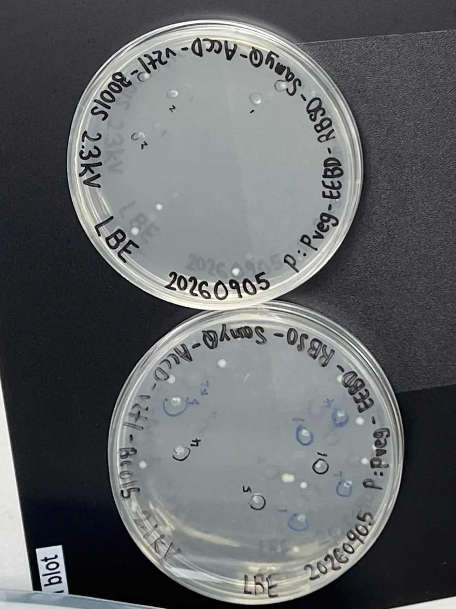
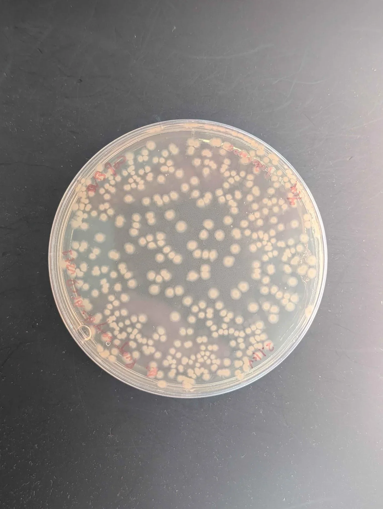
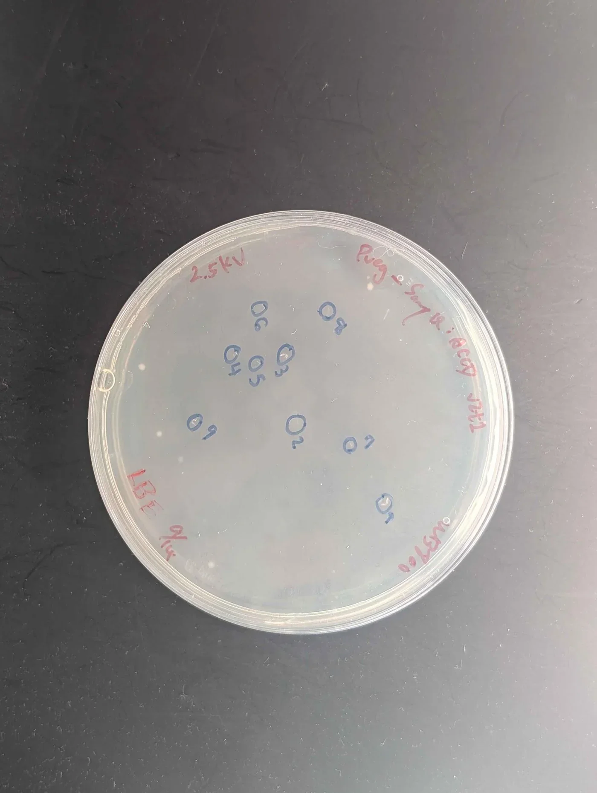
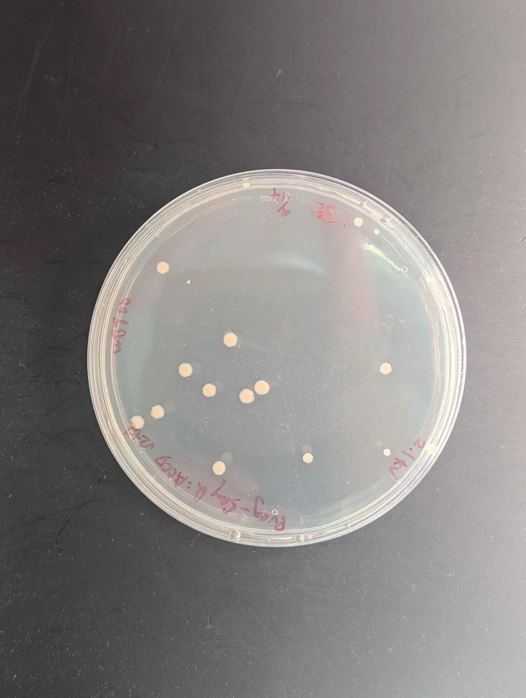
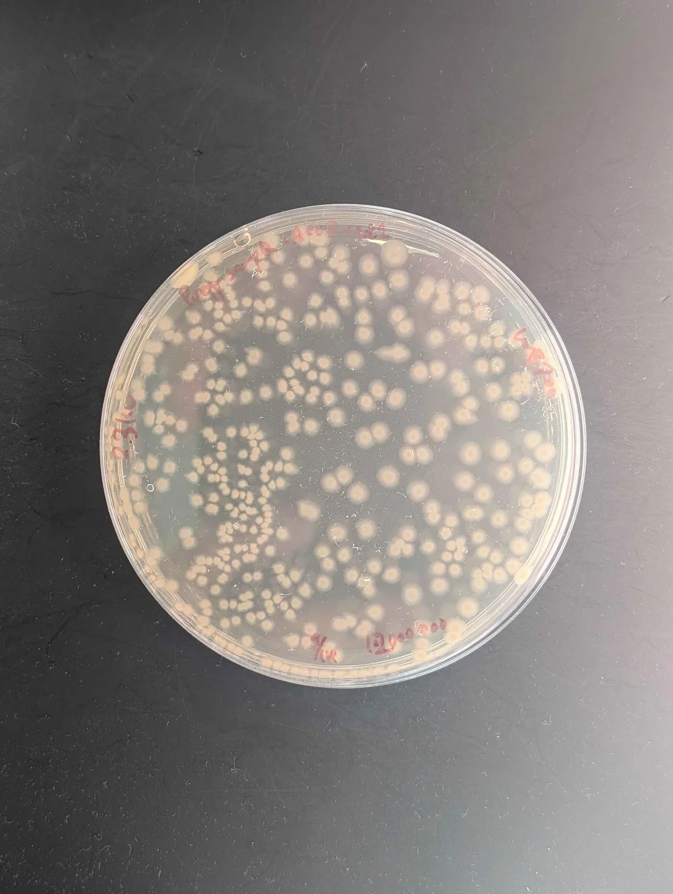
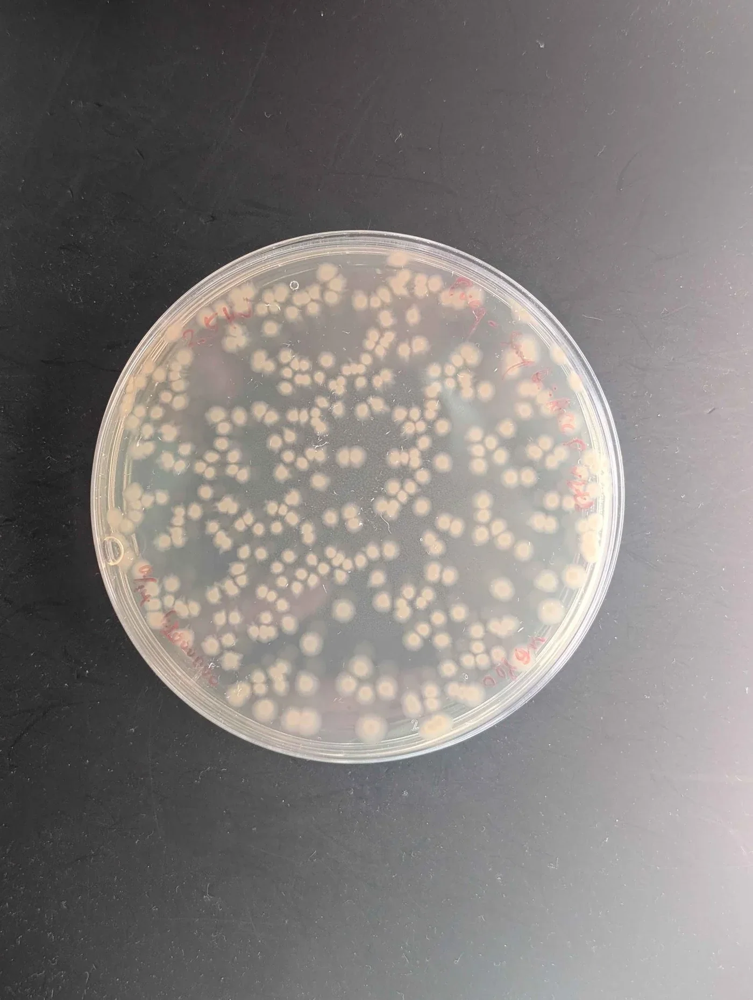
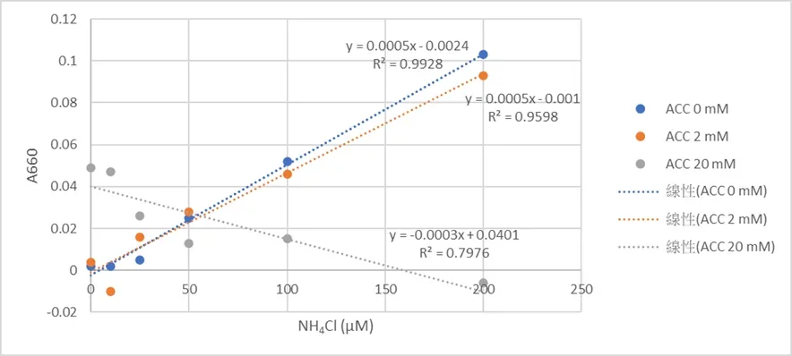
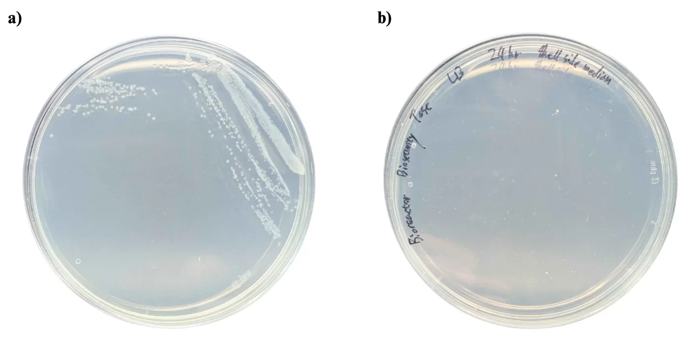

Overview
In our project, we claimed several engineering successes. However, how do we make sure what we see is truly a success? In this section, we need to make sure that what we do is credible and reproducible.
Can our engineered Bacillus subtilis detect plant stress and respond by producing and releasing the appropriate plant protectant at the right moment? How well does the protectant aid in plant growth?
That question splits into four measurable pieces, and the four families below answer them in order. Each one is reported the same way: how the measurement works, what it is useful for outside this project, the protocol in enough detail to repeat, and what it returned, including the runs that failed.
Plant assays
Does a protectant rescue a stressed plant, and does timing matter? Arabidopsis on agar and in hydroponic culture, read as root length, fresh weight and chlorophyll.
Optogenetic control
Can the light plate deliver a controlled signal? Lux matched LED by LED, then growth and expression read against colour and intensity.
Protectant assays
Is the protein there, and is it active? Transformation first, then a blot and an ELISA for presence and amount, and two colorimetric assays for what the enzyme actually does.
Bioreactor assays
Is the reactor doing what the design says? Density read in the loop, pressure and flow across the membrane, and the containment checks.
The four are not independent. The plant assay is the only one that reads the thing the project is for, and it depends on the protectant assays to say that the protein sprayed on a plate was really there; the protectant assays depend on the bioreactor to produce the material; and the bioreactor's own control loop depends on the light plate and the inline photometer agreeing about what the culture is doing. A failure anywhere upstream shows up as an unexplained plant result, which is why each block below names its blank and its controls.
Plant assays
Four measurements share two growing platforms. The agar assay sets the stress and the dose on a flat surface; the hydroponic assay puts the same protectants in front of a root system standing in liquid. The chlorophyll extraction reads how much photosynthetic machinery survived either one, and the physical measurements give the root length and the fresh weight that every chlorophyll number is normalised against.
Agar plate stress test, horizontal and vertical
Our project mainly discusses whether an engineered Bacillus subtilis can supply the right plant protectant at the right moment and how much that protectant will help plant grow and further leads to better crop yield for farmers in real life application. To know whether a protectant truly has a rescue effect on a plant and whether timing matters, we built a plant measurement on Arabidopsis thaliana seedlings grown on ½ Murashige and Skoog (MS) agar (Murashige & Skoog, 1962). It needed to be a controlled and repeatable system where the stress dose, protectant types, and the timing could each be changed one at a time.
Salinity stress damages plants in readable ways. Exposure of Arabidopsis to NaCl alters stress-response gene expression (Cheng et al., 2013; Rolly et al., 2020) and, at the whole-seedling level, stunts root growth, bleaches leaves through loss of chlorophyll (chlorosis), and turns leaves purple through anthocyanin accumulation. Stress ethylene contributes to these effects as it inhibits root elongation (Růžička et al., 2007) and impairs photosynthesis (Ceusters & Van De Poel, 2018), which is the reason why the bacterial enzyme ACC deaminase, which breaks down the ethylene precursor ACC, is one of our protectants (Glick, 2014). With the damage showing up in root length differences, biomass and leaf pigment, a protectant that works should be able to lengthen roots, raise biomass, and preserve chlorophyll compared with a stressed and untreated plate.
We chose agar for three reasons. Firstly, every seedling receives identical nutrients and an exact stress dose, which is hard to guarantee in soil as it contains more uncontrollable variables such as ununiformed moisture levels, pH, and minerals. Secondly, early physiological changes appear within days of observation, allowing many conditions to be screened quickly. Thirdly, it establishes clear baselines before testing in complex soil systems for salinity concentrations that can easily demonstrate stressed environments, protectant concentrations that has obvious rescue effectiveness on plants, and protocol validations.
| Readout | Purpose | Units | Main limitations |
|---|---|---|---|
| Primary root length | Test growth under stress (vertical plates) | mm, from ImageJ on calibrated and scaled photographs | Measures one organ. Photo scale must be set accurately. Roots that curl and misplaced plants are harder to trace |
| Fresh weight | Measure total biomass; normalizes chlorophyll data | mg, measured per group | Smaller seedlings weigh little so errors are proportionally large |
| Photographs | Document physical leaf color, leaf area, lateral roots, and contamination issues | qualitative | Visual only. Used to support and not replace the quantitative data |
| Chlorophyll content | Test leaf health and chlorosis | mg chlorophyll per g fresh plant weight | Per-weight values can look high in tiny and stressed seedlings so they must be read and normalized with fresh weight and photographs |
Vertical square plates
The plates are designed to let roots grow along the surface under gravity, so primary root length and lateral roots can be measured from photographs. We used them for the trehalose experiments in Phase 1 and planned them for the heat tests.
Horizontal circular plates
The plates are designed to hold liquid protectant on the agar surface, which vertical plates cannot fulfill. We used them for the CH bio peptide and ACCD experiments in Phases 2 and 3, where treatment timing of salinity was a variable (pre-treatment, co-treatment, after-treatment). Horizontal circular plates also provide higher capacities of n values in each trial which minimizes inconsistencies; for example, vertical square plates can allow the testing of around 9 to 10 Arabidopsis thaliana seedlings while horizontal circular plates can hold around 40 seedlings.
The experiments ran in three phases, ordered by how well each protectant was understood, commercially used, and researched so that each phase checked the system before the next relied on it. Phase 1 used trehalose, a disaccharide reported to protect Arabidopsis under salinity stress (Kim et al., 2025), to find a NaCl level that gives a readable signal and to confirm the platform can show a rescue. Phase 2 used a commercial peptide (CH Biotech bio peptide) as a positive control and to test application timing. Phase 3 used ACC deaminase, LEA, and BoPEP4 secreted by our engineered Bacillus subtilis. A heat-stress version of the assay, based on published thermopriming protocols (Lee et al., 2023; Auverlot et al., 2025), was designed for the same protectants.
What the platform is useful for
Seedlings on agar are one of the most widely used formats in plant biology and the platform described here applies beyond our project in several ways.
- Screening for salt-tolerance of plants. Arabidopsis grown on agar supplemented with NaCl is a standard way to test how genes, mutants, or treatments change salt tolerance (Cheng et al., 2013; Rolly et al., 2020). Our dose-response data tested salinity concentrations of 75, 100, 150 and 250 mM NaCl, read against the control group on the same plate. At 75 mM, fresh weight and total chlorophyll stayed near control levels. At 100 mM growth was clearly reduced and the rescue effect was still visible, which is what makes it the working concentration. At 150 mM growth was stunted to about the same degree as at 100 mM but with little rescue, total chlorophyll fell sharply, and anthocyanin accumulated enough to purple the leaves. At 250 mM close to every sample showed chlorosis and severe bleaching and none recovered. The boundaries are approximate percentages of control and not fixed thresholds, because each trial differed. The discovery allows future researchers to skip the pretests and begin in the 75 to 100 mM window where growth is reduced but rescue is still visible.
- Testing plant growth-promoting bacteria and biostimulants. Microbes that lower plant ethylene with ACC deaminase are used to promote plant growth under stress (Glick, 2014). Plate assays are a common way to test bacterial effects on Arabidopsis stress tolerance (Lee et al., 2023). Our design compares bacterial products at defined timings and with equal liquid controls. The standardized protocols allow a reusable screen for any protectant testing, so other teams and researchers can test their own molecule or microbe with the same readouts, plates, and analysis.
- Testing exogenous protective compounds. Sugars such as trehalose have been tested on Arabidopsis thaliana under salinity stress (Kim et al., 2025). Our trehalose sets show how to find the usable dose range of a candidate compound. Too high of concentrations might inhibit and harm plants as well because it triggers the toxic accumulation of an intermediate signaling metabolite, trehalose-6-phosphate (T6P), which disrupts normal carbon allocation and energy signaling, causing growth arrest such as stunted roots and undeveloped leaves (Schluepmann et al., 2004).
- Heat-stress assays. The same plates and readouts can be used with thermopriming protocols (Lee et al., 2023; Auverlot et al., 2025).
- Timing studies for delivery driven by sensors. The protectant is applied before, with, or after stress; therefore, the platform can test whether early delivery matters. This directly connects to the question behind AIoT-based stress prediction and sensing in the field.
- Teaching and iGEM labs. The equipment is inexpensive (plates, a camera in a light box, a balance, and free ImageJ software) and every step is described below in the procedural steps.
- Honest record of failure modes. Especially for contamination issues or failure to see effectiveness in protectant doses, so other teams can avoid repeating them as to also provide improvements and suggestions to protocols for higher quality readouts.
Materials per 50 mL vertical square plate and per 30 mL horizontal round plate
| Item | Manufacturer or source | Per 50 mL plate (vertical square) | Per 30 mL plate (horizontal round) |
|---|---|---|---|
| Arabidopsis thaliana seeds | Col-0; from Professor Kyle and Professor Cheng | 33 seedlings per plate for stratifying and 9 per plate after transferring and for actual trial testing | 40 seedlings per plate for stratifying and testing |
| ½ MS basal salt mixture without sucrose | MS Bioexp, catalog number P002 | 0.115 g (2.3 g/L) | 0.069 g (2.3 g/L) |
| Sucrose | Shimakyu's Pure Chemicals | 0.5 g (1% w/v); 1.5 g (3%) in Sets 1 to 3 | 0.3 g (1% w/v) |
| MES buffer | Santa Cruz Biotechnology, lot 10326 | 0.025 g | 0.015 g |
| Agar powder | Kaidin Technology Co., Ltd, lot 8140311 | 0.5 g (1% w/v) | 0.18 g (0.6% w/v) |
| Distilled water | – | 50 mL | 30 mL |
| KOH (industrial grade) for pH adjustment | Cheng Yi Chemical Co., Ltd, 95%, CAS 1310-58-3 | as needed, to pH 5.7 to 5.8 | as needed, to pH 5.7 to 5.8 |
| NaCl | Bioshop Canada Inc., CAS 7647-14-5 | see the NaCl table | see the NaCl table |
| Trehalose | Cheng Yi Chemical Co., Ltd, dihydrate, SD300111 | see the dose table | see the dose table |
| CH Biotech bio peptide | CH Biotech | 1/500 dilution in sterile water (20 µL per 10 mL) | 1/500 dilution in sterile water (20 µL per 10 mL) |
| Purified ACC deaminase, LEA, BoPEP4 | Secreted by our engineered B. subtilis; filtered through 0.22 µm | sprayed; see the procedure | sprayed; see the procedure |
| Square plates (vertical) and round plates (horizontal) | – | 1 plate per condition | 1 plate per condition |
| Sterile spray bottle and nozzle | – | 3 sprays per plate | 3 sprays per plate |
| Camera and light box | – | fixed position, black and white backgrounds | photographed in the biosafety cabinet against a black background |
| Analytical balance | – | 1, for fresh weight | 1, for fresh weight |
The manufacturer and model of the plates, spray bottle, camera and balance are not recorded in this protocol.
Stress and protectant doses NaCl per plate, and what each phase applied
| Final NaCl concentration | Per 30 mL, mixed with agar | Per 50 mL, mixed with agar | Per 30 mL, 1 mL per plate as liquid treatment |
|---|---|---|---|
| 75 mM | 0.131 g | 0.219 g | 0.00438 g (4.38 mg) |
| 100 mM | 0.175 g | 0.292 g | 0.00584 g (5.84 mg) |
| 150 mM | 0.263 g | 0.438 g | 0.00877 g (8.77 mg) |
| 250 mM | 0.438 g | 0.731 g | 0.01461 g (14.61 mg) |
| Phase | Protectant | Doses and how added |
|---|---|---|
| 1 | Trehalose | 0.125 to 10 mM, mixed into the agar before it sets |
| 2 | CH bio peptide | 1/500 dilution (manufacturer's recommended use); 1 mL per plate after submerging the surface |
| 3 | ACCD, LEA, BoPEP4 | filtered (0.22 µm), 3 sprays per plate from 10 cm |
The trehalose stock concentration and the volume added per plate are not recorded.
Growth procedure medium, sterilization, stratification and the daily record
Neutral ½ MS medium agar preparation for stratification
- Prepare the ½ MS medium powder without sucrose, MES buffer, distilled water, sucrose (1%) and agar powder in the amounts in the materials table.
- Add the contents above into a flask.
- Use a hot plate to stir, with a magnetic stirring rod, until no sediments are left in the solution.
- Use the pH probe and measure the pH of the solution (target pH is 5.7 to 5.8). If the pH is too low, add 0.1 M KOH slowly to increase the pH. If the pH is too high, add 0.1 M HCl slowly to decrease the pH.
- Wrap the neck of the flask with aluminum foil and stick a piece of indicator tape on top.
- Autoclave for 20 minutes at 127 °C. Wait for the pressure to reach 0 before retrieving the flask.
- During the autoclave, label all of the petri dishes with a marker in the biosafety cabinet. Include agar percentage and date the agar was made.
- Transfer half of the flasks to a laminar flow hood. Store the other half of the flasks in the hot bath at 60 °C while pouring so that the agar solution does not solidify immediately.
- Make sure the surface is dry by wiping the flasks with a paper towel before spraying 70% EtOH on them.
- Pour each of the medium mixtures into their petri dishes (around 30 mL for horizontal round plates and 50 mL for vertical square plates).
- Transfer the other half of the flasks into the laminar flow hood and pour each of the medium mixtures into the petri dishes.
- Let the petri dishes solidify at room temperature (around 25 °C) for around 10 minutes under the laminar flow hood with the plastic lid on.
Seed sterilization and germination
- Surface-sterilize seeds, then rinse with sterile water.
- Sow seeds on neutral ½ MS agar plates: 40 seeds per plate on the horizontal round plates and 33 seedlings per plate on the vertical square plates, following the seed templates.
- Use breathable tape to seal each of the agar plates.
- Wrap the agar plates with aluminum foil.
- Stratify in the dark at 4 °C. Stratification synchronizes germination so seedlings are uniform and have consistent growth conditions.
- Move plates to the growth chamber. Grow for 4 days (horizontal round plates) or 7 days (vertical square plates) before protectant dosing and salinity concentration stress trials.
The sterilizing agent, its concentration and contact time, the number of rinses, and the growth chamber's temperature, light intensity and photoperiod are not recorded.

Recording every day
Vertical square plates. Observe for 10 days. Set up the black background platform and turn on the lights. Take the agar plates one by one out of the growth chamber and place them on the black background platform, bottom lid facing up. Take pictures, clearly recording the labels, with no reflections, avoiding water vapor covering the view of the plants. Place the agar plates back, tilted slightly to the back on the rack, in the growth chamber.
Horizontal round plates. Observe for 10 days. Take the agar plates one by one out of the growth chamber. Spray 70% EtOH on the agar plates and place them in the laminar flow hood. Unwrap the breathable tape. Place the agar plates on a black background platform, open lid, leaves facing up; on the last day, take out the lid and take the picture directly from the top view and measure fresh weight and chlorophyll data afterwards. Wrap a phone in plastic wrap and spray 70% EtOH before placing the phone inside the laminar flow hood. Take pictures, clearly recording the labels. Wrap breathable tape around the agar plates and place them back in the growth chamber.
Stress assays the vertical and horizontal plate assays, step by step
Vertical plate assay (Phase 1, trehalose)
- Take the stack of agar plates wrapped in aluminum foil out of the refrigerator.
- Spray alcohol on the agar plates before placing them inside the laminar flow hood.
- Use a marker to draw a straight baseline along a ruler 5.5 cm from the top of the plate on the back of each salinity plate.
- With an alcohol marker, mark 9 dots along the baseline in equal distances. The square agar plate is 12 cm horizontally with 10 spaces between the borders of the plate and between each seedling, so 12/10 = 1.2 cm as distance between each seedling.
- Place the square plates vertically at a slight angle.
- Choose 9 germinated seeds after vernalization that have similar root lengths or germination status and align the endpoints of their roots to the line drawn on the plate.
- Seal the plates with breathable tape and label the incubation date with a marker before placing the vertical plates on the stacks in the growth chamber, slightly tilted towards the back.
Horizontal plate assay (Phases 2 and 3), heat stress
Transferring the seedlings
- Take the stack of agar plates wrapped in aluminum foil out of the refrigerator.
- Spray alcohol on the agar plates before placing them inside the laminar flow hood.
- Draw a straight line along a ruler 5.5 cm from the top of the plate, using the seed template.
- Place the plates at a slight angle.
- Choose 12 germinated seeds of similar root length or germination status and align the endpoints of their roots to the drawn line.
- Set up four groups: control, pre-treatment one day before, co-treatment on day 0, and after-treatment one day after.
- Seal the plates with breathable tape, label the transfer date, and place them on the rack in the growth chamber, tilted slightly towards the back.
Applying the treatments
- Pre-treatment, one day before. Open the biosafety cabinet. Dilute the CH peptide 1/500, that is 19.96 mL of sterile ddH₂O to 40 µL of peptide, in a 50 mL centrifuge tube and fit a sprayer. Take out the plate labelled pre-treatment, hold it vertically, and spray the peptide over the plants from leaves to roots at a distance of 15 cm, about two sprays, making sure every plant is covered. Seal with breathable tape and return it to the growth chamber.
- Co-treatment, day 0. Take out the plate labelled co-treatment, hold it vertically, and spray evenly at 15 cm, about two sprays. Seal with breathable tape.
- Place all four groups on a rack, plates standing at a slight angle, and put the rack into the incubator at 37 °C under white light for thermopriming.
- Observe the seedlings for a further 5 days in the incubator.
- After-treatment, one day after thermopriming. Take the after-treatment plate out of the incubator, hold it vertically, spray evenly at 15 cm, seal with breathable tape and return it to the incubator.
The salinity version of the horizontal assay follows the same four timing arms, with 1 mL of NaCl solution applied to the agar surface in place of the temperature change.
Controls and quality control seven groups, and what each one rules out
| Control | What it tests |
|---|---|
| No NaCl, no protectant | Healthy baseline, no changes. All relative values are set against this group |
| NaCl, no protectant | How much damage the stress causes. This is the group the protectant must overperform to demonstrate effective rescue |
| No NaCl, plus protectant | Whether the protectant itself harms unstressed plants; for example, higher concentration dosage of protectants may have negative inhibitory instead of rescue effectiveness |
| Sterile water or TB medium instead of protectant | Equal liquid volume so the difference in liquid volume is not a hidden variable (submersion equality) |
| Commercial CH peptide and trehalose | Act as standardized performance control to compare against our engineered Bacillus subtilis released ACCD, LEA, and BoPEP4, and act as positive control demonstrating protectants' proven rescue effectiveness |
| Western blot of the sprayed Bacillus subtilis preparation | Whether the protein we claim to apply is present |
| Filtered TB medium from empty-vector Bacillus subtilis | Whether an effect comes from the medium rather than the engineered protein |

| Problem | Where | Fix or next step |
|---|---|---|
| Contamination (fungal, bacterial) | Sets 4, 5, 7, 8 | Stricter aseptic technique from Set 5; filter and spray preparations and seal plates with breathable tape inside the laminar flow hood for Set 8 repeats |
| Stress too severe (150 mM dried plants; 250 mM no recovery and severe chlorosis and bleaching) | Sets 1, 2, 5 | Narrowed to 75 and 100 mM NaCl for future experimental set testing |
| 1 mM trehalose toxic; 0.5 mM too weak | Sets 1 to 3 | Fine-tuned 0.125 to 0.5 mM in Set 3, then re-tested up to 10 mM in Set 5 |
| Inconsistent seedling growth | Pretest sets | Added a stratification stage of around 4 days before transferring plates to the growth chamber to synchronize plant growth and status |
| Weak or uneven seedlings; high sucrose causing dehydration | Early sets | Sucrose lowered from 3% to 1%; germination lengthened from 4 to 7 days |
| Transfer damage to fragile seedlings | Horizontal assays | Treatments added directly to existing plates |
| Uneven liquid coverage on agar | Phase 2 | 3 mL added then 2 mL removed (1 mL of liquid protectant or NaCl in plate); equal water volume in controls |
| No ACC deaminase in the sprayed preparation | Set 8 | Western blot of every batch before spraying |
| Plant roots struggle to penetrate the agar in horizontal plates, leading to deaths and lack of nutrients | Set 7 | Lowered the agar concentration from 0.8% to 0.6% |
| Too much humidity inside the agar plates and plants soaked in water | All sets | Place agar plates in the laminar flow hood to blow dry for 1 to 2 minutes to remove excess moisture |
| Root status and rosette leaf growth not obvious in observation pictures | Pretest sets | Place a black background under the agar plates in the laminar flow hood and wrap the phone in plastic to take clear, high resolution pictures for horizontal circular plates; place vertical square plates in a black background light box and use a professional camera for the daily record |
The agar platform is sensitive to stress and to protectant dose, has a clear rescue window near 100 mM NaCl, proved trehalose and the CH peptide as effective protectants, and gave evidence on application timing. Chlorophyll expressed relative to fresh weight can look high in small and stressed seedlings, so it must be read with fresh weight and the photographs.
Hydroponic stress test
We transplanted Arabidopsis into a hydroponic box to evaluate the efficacy of protectants on plants. We use hydroponics to test the effectiveness because we can control the environmental factors precisely. First, the agar in the lid and the medium in the hydroponic box ensure a complete nutrient supply for the plants. We also control humidity and temperature in a constant range to fix the outer conditions that may affect the results of experiments.
Agar settles the dose and the timing on a flat surface; hydroponics is where the same protectants meet a root system standing in liquid, which is the condition a field application has to work in. The two platforms share their readouts, so a number taken here can be set beside a number taken on a plate. What hydroponics does not give is root length: the roots grow into the well and cannot be photographed against a scale, so the readouts are fresh weight, chlorophyll and the daily photographs.
| Readout | Purpose | Units | Main limitations |
|---|---|---|---|
| Fresh weight | Measure total biomass; normalizes chlorophyll data | mg, measured per group | Smaller seedlings weigh little so errors are proportionally large |
| Photographs | Document physical leaf color, leaf area, lateral roots, and contamination issues | qualitative | Visual only. Used to support and not replace the quantitative data |
| Chlorophyll content | Test leaf health and chlorosis | mg chlorophyll per g fresh plant weight | Per-weight values can look high in tiny and stressed seedlings so they must be read with fresh weight and photographs |
Two vessels
Transparent tip box. After testing several prototypes of the hydroponic box, we settled on a 1000 µL tip box with a customized 3D printed board. The box is transparent, which lets us watch the plants and holds thirteen Arabidopsis seedlings. We used the tip box for the pretests of salinity and heat stress rescue by the CH peptide.
Tube rack. We first used the tube rack only to grow seedlings before an experiment began, then began running experiments in it directly. One rack holds forty-eight plants, enough to test ACCD and BoPep4 against both salinity and heat stress on a single rack. We moved to the rack because of time, and the plants in it grew at least as well as those in the tip box with less contamination. The build history of both vessels is on Plants; what follows is the measurement they carry.
What the platform is useful for
A reproducible hydroponic cultivation system. Hydroponics provides a stable environment for plant research by fixing nutrient availability, water purity and stress intensity. We tested two systems, the tip box and the tube rack, and record the materials, the assembly, the nutrient medium and the environmental conditions for both, so another team can rebuild either one.
A salinity-stress protocol. We took the salt concentration from Cortés-Jiménez et al. (2014). After several pretests, 100 mM NaCl is the concentration at which plants are damaged and can still be rescued by a protectant.
A heat-stress protocol. We followed the heat-stress design of Lee et al. (2023) and exposed plants at 37 °C and 42 °C. The groups at 42 °C did not survive the day, while the groups at 37 °C were rescued by the CH peptide. A team setting up a heat assay can start from 37 °C and treat 42 °C as past the point of recovery.
A working dilution range for a bacterial supernatant. We tested 1/40, 1/60, 1/80 and 1/100 dilutions of both protectants. The plants tolerate all four, and 1/40, 1/60 and 1/80 are the three the team reads as giving the best rescue, ACCD under heat and BoPep4 under both heat and salinity. The finding another team can take without qualification is the ceiling: the carrier medium, and not the protectant, sets the strongest dose a plant will tolerate.
A contamination finding. Plants grown in the tube rack were contaminated less often than plants in the tip box. Our working explanation is the transfer step: tip box plants were moved from the rack at four days old, and although a group would usually survive three to four days afterwards, most ended in severe contamination. Plants left in the rack never have their roots handled.
A record of four boxes that did not work. We troubleshot four hydroponic boxes before the fifth, a 1000 µL tip box with a 3D printed board and a 3D printed black cover to keep light off the medium. The tip box is less stable than the tube rack, and we still offer the fifth design as a prototype other teams can modify.
Materials the lids, the agar in them, and the medium in the well
Planting the seeds
| Item | Amount per box |
|---|---|
| Eppendorf microtube lids | 13 |
| Leather punch | 1 |
| 0.6% agar | 250 µL |
| Tweezers | 1 |
0.6% agar, the plug each seed sits in
| Material | Manufacturer or source | Amount |
|---|---|---|
| ½ MS powder without sucrose | MS Bioexp, catalog number P002 | 0.000575 g |
| MES buffer | Santa Cruz Biotechnology, lot 10326 | 0.000125 g |
| Distilled water | – | 250 µL |
| Sucrose (1%) | Shimakyu's Pure Chemicals | 0.0025 g |
| Agar powder (0.6%) | Kaidin Technology Co., Ltd, lot 8140311 | 0.0015 g |
The hydroponic system
| Item | Manufacturer or source | Per tip box | Per tube rack |
|---|---|---|---|
| Arabidopsis thaliana seeds | Col-0; from Professor Kyle and Professor Cheng | 13 seedlings, for stratifying | 48 seedlings, for stratifying and testing |
| 0.1× MS medium | – | 300 mL | 100.8 mL |
| 3 M NaCl, when 100 mM is applied | – | 10 mL | 3.36 mL |
| CH peptide, when applied | CH Biotech | 600 µL | – |
| Material | Manufacturer or source | Per tip box | Per tube rack |
|---|---|---|---|
| ½ MS powder without sucrose | MS Bioexp, catalog number P002 | 0.138 g | 0.0464 g |
| MES buffer | Santa Cruz Biotechnology, lot 10326 | 0.15 g | 0.0504 g |
| Distilled water | – | 300 mL | 100.8 mL |
| Material | Manufacturer or source | Per tip box | Per tube rack |
|---|---|---|---|
| MES buffer | Santa Cruz Biotechnology, lot 10326 | 0.005 g | 0.00168 g |
| ½ MS powder without sucrose | MS Bioexp, catalog number P002 | 0.0046 g | – |
| Distilled water | – | 10 mL | 3.36 mL |
| NaCl | Bioshop Canada Inc., CAS 7647-14-5 | 1.7532 g | 0.5890752 g |
Ten millilitres of that stock into 290 mL of medium gives the 100 mM working concentration in a tip box. The batch procedure below makes 400 mL of the same 3 M stock at once.
Protectant doses by phase
| Phase | Protectant | Dose and how added |
|---|---|---|
| 1 | CH peptide | 1/500 dilution, the manufacturer's recommended use; 600 µL per tip box |
| 2 | ACCD, BoPep4 | Filtered supernatant 0.642 mL, or WB800 control supernatant 0.608 mL, per well |
Growth procedure agar plugs, four days at 4 °C, then the growth chamber
0.6% agar for stratification
- Add the ½ MS medium powder, MES buffer, distilled water, sucrose and agar powder in the amounts above into a flask.
- Use a hot plate to stir, with a magnetic stirring rod, until no sediments are left in the solution.
- Measure the pH with a pH probe; the target is 5.7 to 5.8. If the pH is too low, add 0.1 M KOH slowly; if it is too high, add 0.1 M HCl slowly.
- Wrap the neck of the flask with aluminum foil and stick a piece of indicator tape on top.
- Autoclave for 20 minutes at 127 °C. Wait for the pressure to reach 0 before retrieving the flask.
The lids, while the agar autoclaves
- Prepare 48 Eppendorf microtube lids for each of the heat and salinity stress tests.
- Use scissors to cut the lid off the microtube.
- Use a leather punch to punch a 3 mm hole in each lid.
- Put the lids into a small beaker, wrap it with aluminum foil and stick a piece of indicator tape on top.
- Autoclave for 20 minutes at 127 °C. Wait for the pressure to reach 0 before opening the autoclave.
- Add 250 µL of 0.6% agar into each lid and wait until it solidifies.
The rack
- Soak a tube rack in bleach for 10 minutes and rinse it with ddH₂O until there is no smell of bleach on it.
- Add 2.1 mL of 0.1× MS medium into each of 48 wells.
- Put the Eppendorf lids onto the wells using tweezers.
Sowing and stratification
- Use an autoclaved toothpick to pick up one seed.
- Place the seed onto the agar through the hole in the lid.
- Wrap the rack with aluminum foil.
- Place the rack in the refrigerator at 4 °C for 4 days to stratify.
- Move the rack to the growth chamber after the 4 days.
3 M NaCl in 0.1× MS medium, batch of 400 mL
- Add ½ MS powder, MES buffer and ddH₂O into a 500 mL flask.
- Use the hot plate to stir, with a stirring rod, until no sediments are left in the solution.
- Adjust the pH to 5.7 to 5.8 with 1 M KOH, using a pH probe.
- Add 70.128 g of NaCl in batches, slowly, into the flask.
- Use the stirring rod to dissolve all the NaCl into the medium.
Transfer from rack to tip box
- After stratification, take the four-day-old plants off the rack onto the 3D printed board.
- Pour 300 mL of 0.1× MS medium into the hydroponic box.
- Place the board carrying 13 plants on the medium.
- Close the lid and put the box in the incubator.
The daily record, for both vessels
- Observe for 10 days.
- Wrap the phone in plastic wrap and wear latex gloves.
- Turn on the biosafety cabinet and lower the plastic board to the line.
- Spray 75% alcohol on the gloves and on the wrapped phone.
- Open the lids of the rack or the tip box inside the cabinet.
- Take pictures that do not reflect.
- Close the lids and return the vessel to the incubator, then close the cabinet.
Phase 1, the CH peptide in a tip box salinity and heat, with the four timing arms
The CH peptide is a commercial product designed to protect plants against general abiotic stress, and it is better characterized than ACCD, BoPep4 or LEA. Phase 1 therefore asks whether the platform can show a rescue at all, using a protectant that should produce one.
Salinity
- When Arabidopsis is 4 days old, transfer it with tweezers to an autoclaved hydroponic box with 300 mL of 0.1× MS medium.
- Wait until it is 10 days old.
- Transfer it into a new box with 290 mL of 0.1× MS medium and 10 mL of 3 M NaCl.
- Add 600 µL of CH peptide to each box.
- Change the medium carrying salinity and peptide back to 300 mL of 0.1× MS medium.
- Observe and photograph for 7 days.
We use 100 mM NaCl from Cortés-Jiménez et al. (2014), which concludes that 1 to 100 mM is the range in which microorganisms can rescue the plant.
| Group | What it tests |
|---|---|
| NaCl, no protectant | How much damage the stress causes. This is the group the protectant must overperform |
| Pre-treatment, protectant 3 days before NaCl | Which timing rescues the plant best |
| Co-treatment, protectant and NaCl together | |
| Post-treatment, protectant 3 days after NaCl |
Heat
- When Arabidopsis is 4 days old, transfer it to an autoclaved hydroponic box with 300 mL of 0.1× MS medium.
- Wait until it is 10 days old.
- Prepare new boxes with 300 mL of 0.1× MS medium each and put them in the incubator at 37 °C to warm the medium.
- Put 300 mL of water in a further box with a thermometer in it, and place it in the incubator to read the medium temperature.
- When the medium reaches 37 °C, transfer Arabidopsis into the warmed boxes with tweezers.
- Add the protectant to the medium at the correct concentration.
- Observe and photograph for 3 days.
- Prepare new boxes with 300 mL of 0.1× MS medium at 22 °C.
- Transfer Arabidopsis into them with tweezers and place them in the growth chamber at 22 °C to recover.
- Observe and photograph for 7 days.
| Group | What it tests |
|---|---|
| 37 °C, no protectant | How the plant behaves at 37 °C, and the baseline the treated groups are compared against |
| Pre-treatment, protectant 1 day before 37 °C | Which timing rescues the plant best |
| Co-treatment, protectant as the temperature rises | |
| Post-treatment, protectant 3 days into 37 °C |
The temperature in step 3 is recorded as 37 °C in this protocol and as 33 °C on one timeline figure held with the run photographs. Nothing in the record settles which the incubator actually held, and the disagreement is carried on Plants as it stands.
Phase 2, ACCD and BoPep4 in a tube rack how a dose is made up, and the two stress runs
Our protectants are produced by B. subtilis grown in TB medium, and we add that medium to the 0.1× MS medium the plants grow in. Every dilution is made by mixing TB into 0.1× MS medium, so 1/60 TB means that 59 parts in 60 are 0.1× MS medium.
Salinity
- Wait until Arabidopsis is 7 days old.
- Add 2.1 mL of fresh 0.1× MS medium to each well, so the plants do not run short of nutrients.
- Wait until they are 10 days old.
- Prepare master mixes at the protectant concentrations to be tested, holding the B. subtilis TB medium at 1/40 in every mix. When ACCD is the protectant, add pyridoxal 5'-phosphate at 1/100, because ACCD does not turn over without it.
- Label the wells, add 2 mL of master mix to each, and add 0.07 mL of 3 M NaCl to the wells under 100 mM salinity stress.
- Transfer the plants onto the rack and return it to the growth chamber.
- Observe and photograph for 7 days.
Heat
- Follow steps 1 to 4 above.
- Label the wells and add 2.1 mL of master mix to each.
- Transfer Arabidopsis onto the rack.
- Put the rack into the incubator at 37 °C.
- Observe and photograph for 5 days.
ACCD only functions in the presence of PLP, so the ACCD treatment is ACCD together with PLP and the matching control is PLP alone in the medium, labelled 0.1× MS medium in the photographs. BoPep4 needs no cofactor, so its control is the medium without BoPep4. Both runs carry a second control, 1/40 WB800: B. subtilis in TB medium with no protectant, which separates an effect of the carrier from an effect of the protein.
Finding a dilution the plants survive
TB at full strength kills the plants, so the first run was a pretest on TB medium carrying B. subtilis and no protectant, to separate the carrier from anything the protectant might do. We tested 1, 1/2, 1/4, 1/8 and 1/16, with 0 as the control, at pH 5.7 and pH 7. The optimum for Arabidopsis is 5.7 and ACCD works best between 8.0 and 8.5, which Arabidopsis will not tolerate, so 7 is the compromise we tested against.

Every TB concentration in the pretest was too strong for the plants to survive, including 1/16. That is a failed rescue window, and it is still the reading that set the next run: the damage falls off steadily with dilution, so the usable range had to be below 1/16.
The salinity run that followed tested ACCD at 1/10, 1/20, 1/40 and 1/60 against 0 ACCD, each with and without 100 mM NaCl, and carried a separate group of 1/20 TB alone at both salt levels. We had expected 1/20 to be dilute enough for the plants to live and 1/40 and 1/60 to be almost without effect.

The expectation was wrong in one place and right in the other. 1/20 TB was still too much for the plants, and ACCD at 1/10 and 1/20 was not dilute enough for them to survive; 1/40 and 1/60 were tolerable. We therefore used 1/40 TB as the strongest dose in the heat runs, and these two runs together narrowed the working range from undiluted TB to 1/40 through 1/100.
The two heat runs
The ACCD and BoPep4 heat tests were set up together and differ only in the protectant, so the two panels below can be read against each other. In both figures the blue rack is the heat control at 22 °C and the white rack is the heat treatment at 37 °C.


At 22 °C both racks carry full green rosettes at every dilution, which says the carrier at 1/40 and below is no longer doing the damage the pretest showed. At 37 °C every group is pale and stunted, the dosed wells along with the two controls, so neither protectant separates from its control on these photographs. The run is reported here as a protocol that worked and a rescue that did not appear; what the same plants gave as fresh weight and chlorophyll is on Plants.
What went wrong, and what we changed
| Problem | Fix or next step |
|---|---|
| Contamination, fungal and bacterial | Stricter aseptic technique, and the move from the tip box to the tube rack, which removes the transfer step |
| TB medium itself damaging the plants | Pretest on TB alone, then a salinity run that put the ceiling at 1/40 |
| ACCD inactive in the medium | PLP added at 1/100 to every ACCD mix, with PLP alone as the matched control |
| Plants not surviving 42 °C | Heat stress set at 37 °C |
Hydroponics was easier to control than a field and harder to control than we expected. Repeating the same trial does not reliably give the same result, even holding 37 °C and 100 mM NaCl after Cortés-Jiménez et al. (2014) and Lee et al. (2023). What the platform does establish is a working window: co-treatment is the timing under which both protectants rescued plants at 100 mM salinity, and dilutions of 1/80 and weaker are where the carrier stops interfering with the protectant's own effect. Those two findings set the arms of the Phase 2 runs.
Chlorophyll extraction
To assess the physiological response of Arabidopsis thaliana seedlings under stress, and evaluate protectant treatment rescue effectiveness in our project, chlorophyll extraction is introduced as a precise tool of measurement to strengthen the analysis of each experiment's results.
Chlorophyll is an essential pigment in the photosynthetic machinery of plants that plays a pivotal role in converting light energy into glucose. Ultimately, varying chlorophyll levels impact plant growth (Roberts, 2023). The metabolic pathways that govern the chlorophyll biosynthesis are complex, which abiotic stress such as salinity stress, drought, extreme temperature variations can substantially perturb these processes (Li et al., 2024).
As connected to our project, we mainly focus on two abiotic stress types: salinity and heat. Given this category, these abiotic stressors trigger the overproduction of reactive oxygen species, leading to lipid peroxidation and chlorosis. Hence, extracting the chlorophyll as a form of data readout and measurement allows quantification on the degree of chlorosis, and permits accurate evaluation of plant physiological response in our experiments that cannot be visually and directly assessed through bare eyes.
Total chlorophyll content
Chlorophyll a + b (mg g−1) = (8.02 × A663 + 20.20 × A645) × V / (1000 × fresh weight)
| Formula component | Purpose |
|---|---|
| A663 | The absorbance of the extract at a wavelength of 663 nm, which corresponds to the peak absorption of chlorophyll a |
| A645 | The absorbance of the extract at a wavelength of 645 nm, which corresponds to the peak absorption of chlorophyll b |
| 8.02 and 20.20 | Empirical absorption coefficients derived from simultaneous linear equations, mainly to prevent overlapping absorption spectra between A663 and A645 |
| 1000 | A conversion factor used to change micrograms to milligrams |
| V | Total volume of extraction solvent |
| Fresh weight | Initial mass of the fresh plant tissue sample, measured in grams |
Materials acetone, beads, a plate reader and a 96-well plate
| Material or chemical | Manufacturer | Specification | Amount |
|---|---|---|---|
| Experimented Arabidopsis thaliana seedlings on each agar plate | – | – | Horizontal: 40 seedlings per plate. Vertical: 12 seedlings per plate |
| Acetone | – | – | 4 mL of diluted 80% acetone per 15 mL centrifuge tube |
| Stainless steel beads | – | 304 and 314 grades | 4 beads per tube |
| 15 mL centrifuge tubes | Biosharp, BS-150-M-S | – | 1 tube to hold all seedlings in each individual experimental group |
| ELISA reader | Infitek MPR-A200HT | – | 1 |
| 96-well plate | BasicLife, BL6060 | – | 1 |
| Vortex machine | – | – | as needed |
| Tweezers | – | – | as needed |
| Weighing plate | – | – | as needed |
Our protocol records 4 beads per tube in the materials table and 10 in the procedure. Ten is what the procedure says to add.
Procedure from lifting the seedlings to reading A663 and A645
- Using a tweezer, lift and pick up all Arabidopsis plants simultaneously from the agar plate in a single motion. Be careful not to hurt the plants by squeezing the tweezer, and lift from below the leaf area.
- Put the plants on a tissue paper, lightly press to remove the agar sticking to the plants. Be careful not to press the leaf areas too hard.
- Place all plants in a weighing plate, weigh the fresh weight of Arabidopsis, a plate at a time.
- Pick up the plants and put them in a 15 mL centrifuge tube, taking care that the entire plant and the roots go in too.
- Label the group concentration and the respective fresh weight on the tube.
- Repeat these steps for as many times as the sets of Arabidopsis you are testing.
- Place 10 stainless steel beads in each of the centrifuge tubes, place in −80 °C for 10 minutes.
- Dilute acetone to 80%, add 4 mL to each tube.
- Wait for the chlorophyll to extract. You can use a vortex or shake vigorously to crush the plants to speed up the process. It is done when the plants are no longer green.
- Label what samples are in each well before loading. This is very important.
- Add the liquid to the 96-well microplate, 200 µL in each well, with three technical replicates per sample. Blank the OD on 200 µL of 80% acetone.
- Insert the 96-well plate in the ELISA reader and run the results through the equation above. Make sure to select the correct wavelength: A663 for chlorophyll a, A645 for chlorophyll b.
From the reader to a graph the raw table, the conversion sheet and the Prism settings
Paste the raw data directly onto the spreadsheet, ensuring each value follows its corresponding wavelength and replicate on the table.


The chlorophyll content of each experimental set result is calculated through the formula above. Certainly, we further converted processed data in each replication into a relative chlorophyll content in relation to control, meaning to divide the chlorophyll data by control. We utilized Prism to turn processed data replicates into bar graphs, selecting "mean with SEM" as the standard error of the mean.

Results
Chlorophyll content maps out the data trend and visualizes seedlings' internal stress regulatory response among experiments.
Trehalose treatment at 0.25, 0.5 and 1.0 mM has an upward trajectory of rescue effectiveness combatting 100 mM NaCl. In phase 1 of trehalose and NaCl agar testing, we integrated chlorophyll content since conducting experiment set #4; through chlorophyll extraction, we were able to visualize the chlorophyll content among different groups. The relationship of trehalose dose between control and 100 mM NaCl conditions shows a conversely contrasting pattern: under baseline conditions, higher trehalose doses slightly depress baseline chlorophyll levels, whereas under 100 mM NaCl stress, they progressively rescue and enhance chlorophyll retention in a dose-dependent manner. Although 0.5 mM trehalose still outperforms other trehalose doses in terms of rescue effect, the overall trend demonstrates a progressive upward trajectory that indicates the trehalose' protective efficacy in mitigating salinity stress.


Read Figure 7 with the caution the agar section ends on: the values are per gram of fresh weight, and stressed seedlings weigh very little, so a group can read high on this chart while the plate photograph shows smaller plants. The heat pretest in Figure 8 is a single set and its control group is the only group without the peptide, so it sets the baseline; it does not test the peptide against a stressed, untreated plate.
The physical measurements of Arabidopsis thaliana
Alongside the chlorophyll extraction data collection, both fresh weight and root length data have been collected for selected experimental sets.
Fresh weight is most closely used to accompany chlorophyll extraction because the fresh weight of each experimental set is used to normalize the chlorophyll accordingly. On the other hand, primary length data was collected to observe the effect of salinity and respective protectant application on root behaviour. The expected behaviour of the primary roots was conducting halotropism, where roots pave their way through the agar as usual but specifically bending away from the salty patches to search for areas without osmotic stress (Zou et al., 2021). However, considering our entire agar plate was mixed with NaCl of different concentrations, the root length of respective agar plates was significantly affected and demonstrated intriguing differences between the application of NaCl and without.
Root length, materials and procedure a light box, a 3D printed rack and ImageJ, after Corrales et al. 2014
| Material | Amount |
|---|---|
| Experimented Arabidopsis thaliana seedlings on each agar plate | Horizontal: 40 seedlings per plate. Vertical: 12 seedlings per plate |
| Camera | 1 |
| Tweezers | as needed |
| Light box | 1 |
| 3D printed agar plate rack | 1 |
| Ruler | 1 |
- Turn off the lights.
- Place one plate of the experimental set into the 3D printed agar plate rack.
- Place the rack into the light box.
- Set up a ruler vertically next to the agar plate rack. This is used to precisely prevent warping of the images at a slanted angle and allow for accurate root length data collection.
- Set a 3 second timer on the camera.
- Press the snapshot button, and use a black sheet of cloth to cover the entrance of the light box, so the images have no reflection to interfere with data collection.
- Zoom into the captured image to ensure quality.
- Repeat steps 2 to 7 with each agar plate of the experimental set.
- Upload images into ImageJ.
- Set the scale of the agar plate (120 mm) using ImageJ: draw a straight line of known distance, then Analyze → Set Scale → known distance → unit of length → Global → OK.
- Measure the length of the primary root from the marked start position to the tip using the segmented line option, then press Control+M to measure.
- Save the measured data in the ROI manager.
- Repeat steps 11 and 12 for all the Arabidopsis plates.
- Select all of the measured data in the ROI manager and click Measure. The measured root length in mm should appear.


Fresh weight, materials and procedure tube, tare, tweezers, and into 85 °C before extraction
| Material | Manufacturer | Amount |
|---|---|---|
| Experimented Arabidopsis thaliana seedlings on each agar plate | – | Horizontal: 40 seedlings per plate. Vertical: 12 seedlings per plate |
| Electronic scale | – | 1 |
| Tweezers | – | as needed |
| Paper towel | – | 1 |
| 15 mL centrifuge tubes | – | 1 tube to hold all seedlings in each individual experimental group |
| 3D printed centrifuge tube holder | – | 1 |
- Label each centrifuge tube with the independent variable of the experimental set.
- Twist off the cap of the centrifuge tube and place it inside of the centrifuge tube holder.
- Calibrate the electronic scale with the centrifuge tube inside of the electronic scale.
- Use tweezers to lift a seedling off of the agar plates. Ensure no roots are stuck inside of the agar, and be careful not to damage the plants by squeezing the tweezers on the leaves; lift from the bottom side of each of the 2 leaves.
- Pass the roots back and forth on the paper towel for around 5 to 6 times so that the mold or contamination does not count into the fresh weight.
- Place the seedling into the centrifuge tube.
- Repeat steps 4 to 6 with all seedlings.
- Place the centrifuge tube rack with the centrifuge tube and seedlings inside of it onto the electronic scale.
- Close the door and wait for 30 seconds for calibration before recording the fresh weight data.
- Remove the centrifuge tube rack from the electronic lab scale.
- Twist the lid back on.
- Label the tube with its fresh weight.
- Repeat steps 1 to 12 with every agar plate with each independent variable of the experimental set.
- Place all centrifuge tubes containing seedlings into 85 °C for at least 1 hour before continuing with chlorophyll extraction.
What the procedure above fixes is the part that decides whether the numbers mean anything: the 120 mm plate width as the scale, the baseline the root is measured from, and the blotting step before the balance.
Results
Root length, heat stress with ACCD, trial 1. Averaged over the whole trial, unstressed Arabidopsis reached 116.4 mm of primary root against 43.5 mm under heat stress, so thermopriming at 37 °C costs the root system roughly two thirds of its length. Within the heat-stressed groups, ACCD applied before the stress gave the longest average root at 46.9 mm, and the co-treatment group performed worst.
Fresh weight, the same trial. Unstressed plants averaged 0.5069 g against 0.0237 g under heat stress, which is the water loss thermopriming causes stated as a number. Among the heat-stressed groups the post-treatment plants held the most water at 0.0318 g, with pre-treatment next at 0.0258 g; the post-treatment group also had three days of recovery under normal conditions, which the comparison cannot separate from the treatment itself.
Both readouts agree on the part that matters for the project: stressed plants given ACCD do better than stressed plants given none. The timing arms do not rank consistently from one experimental set to the next, so the pre-treatment advantage seen here is a repeated observation and not a settled result. It is the observation the delivery argument rests on, because a protectant that works best before the stress arrives is what makes stress prediction worth doing at all.
What went wrong, and what we changed
Plates leaning back in the light box shortened the roots. A plate resting against the back of the box is photographed at an angle, which foreshortens everything on it. We 3D printed a rack that holds a 12 to 13 cm square plate upright, so the plate is square to the camera and the 120 mm calibration in ImageJ is the distance it claims to be.
Reflections obscured the measurement. Turning off the room lights and covering the opening of the light box with black cloth was not enough, because the box's own lights reflect off the plate. Moving the rack within the box and changing its distance from the camera left a reflection only at the extreme edges, clear of the roots.
Roots grew over each other in the denser groups. In the control groups especially, the primary root could not be told from its neighbours. For the last two or three sets we lifted the plants onto a thin sheet of black foam, laid parallel; pulled from the agar they clump, and the primary root is the longest, so it can be followed. Those photographs were taken from directly overhead with a 15 cm ruler beside the plants for calibration.
Optogenetic control
Can the light plate deliver a controlled signal for optogenetic activation? ReLEAF depends on light as the external control signal connecting environmental prediction to biological production. We therefore tested the light plate to determine whether it could provide reproducible illumination across the culture area.
A predicted environmental condition is turned into a light input that tunes production of ACCD in B. subtilis through the CcaSR red and green light-sensing system (Castillo-Hair et al., 2019). For that to work, light has to act as a reliable dial. We need to know whether low, medium and high intensities give clearly separated levels of ACCD expression, and whether the light itself affects cell growth. The Light Plate Apparatus is an open-hardware, 24-well platform with independently programmable LEDs in every well (Gerhardt et al., 2016), so several intensities of red and green can run side by side in one experiment on one culture. Following the established CcaSR protocol for B. subtilis (Haller et al., 2025), we track the response over time with OD600 and Western blot. The settings that give a reproducible, graded response become the intensity levels ReLEAF uses to control ACCD production, and because every conclusion depends on the plate, the plate is what we characterized first.
What the measurement contributes
The Light Plate Apparatus is a general platform for characterizing light-inducible gene expression, not a CcaSR instrument. A team can survey light-responsive genetic modules beyond CcaSR and fit LEDs matched to each module's activating wavelength, which turns the same plate into a characterization tool for a wide range of optogenetic systems. What we add is the step before that: a worked method for matching cheap single-bulb LEDs by measured output, so the wells in one column receive the same light and the columns are genuinely different from one another.
Matching the LEDs before trusting the plate
Internal resistor variance is a common problem in cheap, single-bulb LEDs. By individually measuring the lumen output value of each LED, we were able to determine which of them have matching internal resistance. Upon finding these similarities among our purchased LEDs, we are able to form 3 groups of 4 LEDs to form columns within our LPA structure for each wavelength we use (we use 2). This will allow us to use mathematical calculations to recalibrate all of the columns of lumens to match, so that we can later create low, medium, and high intensity light to create variance for our B. subtilis protectant production testing.


Experiment procedure twelve tubes, five sampling points, under minimal light
- Prepare LB media, 2 mL per tube in each well. Mix thoroughly.
- Prewarm the media to 37 °C.
- Inoculate the LB with B. subtilis WB800 + CcaSR culture. No prior dilution is needed since the culture is already at low density.
- Aliquot 2 mL of the culture into each of the twelve tubes.
- Place each tube in its position in the 24-well LPA plate, following the plate map. The remaining slots stay empty.
- Secure the plate to the LPA device.
- Start the light program, incubate at 37 °C, shaking, for 8 to 10 hours total. Set each column to its colour and light lux level listed in the plate map.
- Every 2 hours, and again at the 24 hour mark, take the plate off the LPA under minimal light. From each of the 12 tubes take 200 µL: 100 µL for OD600 and 100 µL for Western blot. Return the plate to the LPA.
- Keep the samples covered from ambient light and run the assays immediately upon removal. CcaSR responds to light extremely fast, only taking seconds to minutes.
Plate map. Six columns alternate red and green. Red is in columns 1, 3 and 5 and green in columns 2, 4 and 6, each colour at a weak, a medium and a high level in the same intensity ratio. The green levels are 220, 510 and 3850 lux. The weak red is 168 lux; scaled by the green ratio, the other two are about 390 and 2,940 lux, which are calculated and not measured. Each column carries CcaSR cultures and the remaining wells stay empty.
Results
The five sampling tables are combined here into one, by sampling time. The background column is the blank read at that time point; the three values in each green cell are the three tubes at that intensity, and the three red values are one tube at each red level, weak, medium and high.
| Time | Background | Red, weak / medium / high | Green 220 lux | Green 510 lux | Green 3850 lux |
|---|---|---|---|---|---|
| 2 h | 0.061 | 0.108, 0.108, 0.103 | 0.118, 0.089, 0.111 | 0.109, 0.115, 0.109 | 0.106, 0.108, 0.103 |
| 4 h | 0.059 | 0.115, 0.114, 0.120 | 0.122, 0.123, 0.119 | 0.123, 0.149, 0.126 | 0.121, 0.119, 0.120 |
| 6 h | 0.057 | 0.188, 0.194, 0.201 | 0.412, 0.383, 0.195 | 0.285, 0.195, 0.208 | 0.295, 0.188, 0.209 |
| 8 h | 0.059 | 0.251, 0.244, 0.256 | 0.293, 0.237, 0.250 | 0.290, 0.284, 0.259 | 0.269, 0.280, 0.269 |
| 24 h | 0.059 | 1.026, 0.969, 1.026 | 1.056, 1.083, 1.081 | 1.059, 1.008, 1.036 | 1.000, 1.020, 1.031 |
Through the first 8 hours the plate behaves: every column leaves the blank behind together, and growth does not track the green intensity, which is what a light plate should show when the light is a signal and not a nutrient. By 24 hours every tube reads between 0.97 and 1.08, red and green alike. The run has not been repeated.
The Western blot that accompanies these samples was run in two films, in the lane order LPA 0, G100 at 2, 4, 6 and 8 h, G12 at 2, 4, 6 and 8 h, and LPA 0, G2 at 2, 4, 6 and 8 h, R100 at 2, 4, 6 and 8 h. Both have since been re-read. The signal is faint at 0 h throughout. Green 100 carries a moderate band from 2 h that holds roughly constant to 8 h; green 12 is faint at 2 h and strongest at 8 h; green 2 stays weak until 6 h and rises at 8 h; red 100 shows a band from 2 h that is strongest at 8 h.
Expression therefore rises with time under green light but does not order itself by intensity, which is the opposite of what a usable dial has to do, and red at full power is not silent. The bands also run near the 63 to 75 kDa markers, while the secreted ACCD construct runs at about 37 kDa on the constitutive blot in the next section, so their identity is not settled by size alone. The scans and that argument are reproduced on Results; no expression claim rests on them here.
Protectant assays
Five measurements follow the protein from the plasmid to the working enzyme. Electroporation decides how the construct gets into the chassis at all. The Western blot asks whether a protein of the right size leaves the cell. The ELISA puts a concentration on it. The Berthelot and DNPH assays read the two products of the reaction the enzyme is supposed to catalyse, and so are the only two that say whether the protein does anything. A concentration and an activity answer different questions and are not interchangeable, which is why both are here.
Bacillus subtilis electroporation
To successfully engineer Bacillus subtilis to produce and secrete bioprotectants (such as ACC deaminase, LEA, and BoPEP4), foreign plasmid constructs carrying these genetic sequences must be efficiently introduced into the host cells.
Electroporation is the application of a high-voltage electrical pulse across the cell membrane which creates transient physical pores that permit plasmid DNA uptake. While standard transformation methods in Bacillus subtilis often suffer from strain-dependent variable efficiency, electroporation provides a more controllable, high-efficiency technique critical for expressing recombinant stress-mitigating proteins (Duckert et al., 2022).
In our project, the experimental protocol uses electrocompetent B. subtilis cells and evaluates transformation under different electroporation conditions. Because electroporation efficacy can be influenced by the electrical parameters used, different voltages were tested while maintaining the designated resistance and capacitance for each strain. Following electroporation, cells were allowed to recover for 3 hours before being plated on selective LB agar. Successful transformants were identified based on colony formation under antibiotic selection, and colony abundance was used as an indicator for comparing transformation efficiency between experimental conditions.
Efficiency in B. subtilis is governed by strain physiology as much as by the applied field, so optimization means tailoring both the cell preparation and the pulse. The two strains differ in the density at which they are harvested, the osmoprotectant buffer and the wash steps: 168 after the DTU-Denmark iGEM team (2015) and WB800 after Lu et al. (2012). Evaluating transformant recovery across a range of peak voltages identifies the field strengths that maximise plasmid uptake without lysing the cells.
The purpose of this experiment was therefore to evaluate bacterial growth following electroporation and identify voltage conditions that produced comparatively high numbers of colonies. The results provide a basis for selecting suitable electroporation conditions for future plasmid transformation and genetic engineering of B. subtilis.
What the measurement contributes
Strain-specific electrocompetent cell protocols. We wrote up separate preparation workflows for B. subtilis 168, after the DTU-Denmark iGEM team (2015), and for WB800, after Lu et al. (2012). They differ in the OD600 at harvest, the washing buffer, the number of washes and the resuspension volume, and those differences are the reason a protocol written for one strain does not transfer to the other.
An optimal voltage for each strain and construct. Comparing voltages at a fixed resistance and capacitance identified the settings that gave the highest colony yields. For strain 168, 2.1 kV returned more colonies than 2.3 kV. For WB800 carrying the CcaSR construct, 2.3 kV gave the highest yield at 370 colonies, and 2.5 kV reduced it.
Evidence of where the voltage starts killing cells. Colony counts fall at the top of each range, which is what excessive field strength and cell lysis look like, and sets an upper limit for these strains. A team can use it to avoid spending cells and plasmid on a pulse that destroys both.
Several constructs through the same protocol. We introduced AcdS-based plasmids, both wild type and v2t1, and the CcaSR light-sensor circuit at over 10 kbp, into B. subtilis. The protocol holds across plasmid sizes and selection markers.
A documented, reproducible procedure. The steps below cover cell preparation, the pulse, three hours of recovery, selective plating and colony counting, which is the baseline for transforming any plasmid expressing a stress-mitigating protein.
Materials two strains, the pulser settings and the selection plates
| Material or chemical | Manufacturer | Specification | Amount |
|---|---|---|---|
| Electrocompetent cells | – | Bacillus subtilis 168 | as required |
| Electrocompetent cells | – | Bacillus subtilis WB800 | as required |
| Plasmid DNA | – | Desired plasmid for transformation | as required |
| Recovery medium | Difco 500 g; OmicsBio 500 g; OmicsBio 100 g | LB growth medium; 0.5 M sorbitol; 0.38 M mannitol | – |
| EP buffer | – | Electroporation buffer | – |
| Electroporation cuvette | Bio-Rad | 0.2 cm electrode gap | 1 per electroporation |
| Microcentrifuge tube | Lichen | 1.5 mL | – |
| 15 mL centrifuge tube | Biosharp | For mixing cells and plasmids | 1 per condition |
| Electroporator | Bio-Rad GenePulser Xcell, PC and CE modules | For electrical pulse delivery | 1 |
| LB agar plate | – | Selective plate containing erythromycin | 1 or more per condition |
| Erythromycin | Kaidin Technology Co., Ltd, 5 g | Selection antibiotic | – |
| Chloramphenicol | Bioshop | Selection antibiotic | – |
| Ice | – | For cooling cells and cuvettes | as required |
| Cell spreader | – | For plating transformed cells | 1 |
| Centrifuge | RWD Life Science, M1324R | Used for cell harvesting and washing | 1 |
| Water bath or incubator | Biopioneer, LM-570RD | 37 °C | 1 |
| Bunsen burner | – | Sterile handling | 1 |
Preparing electrocompetent cells B. subtilis 168 and WB800 differ in harvest density, washes and buffer
B. subtilis 168
- Dilute the overnight bacteria culture to 16-fold in growth medium.
- Incubate the diluted culture at 37 °C with shaking at 200 rpm until the OD600 reaches 0.85 to 0.95.
- Cool the culture on ice for 5 minutes.
- Centrifuge the cultures at 5,000 × g for 10 minutes.
- Carefully discard the supernatant and wash the cell pellet twice with ice-cold EP buffer.
- Resuspend the pellet in 1/20 of the original culture volume of electroporation medium.
- Aliquot the electrocompetent cells into pre-chilled microcentrifuge tubes.
- Store the electrocompetent cells at −80 °C until use.
B. subtilis WB800
- Dilute the overnight bacteria culture to 16-fold in growth medium.
- Incubate the diluted culture at 37 °C with shaking at 200 rpm until the OD600 reaches 2.2.
- Cool the culture on ice for 5 minutes.
- Centrifuge the cultures at 5,000 × g for 10 minutes.
- Carefully discard the supernatant and wash the cell pellet four times with ice-cold EP buffer with 1.5 mol/L trehalose.
- Resuspend the cells in 1/40 of the original culture volume of ice-cold EP buffer.
- Aliquot the electrocompetent cells into pre-chilled microcentrifuge tubes.
- Store the electrocompetent cells at −80 °C until use.
Electroporation of cells pulse, three hours of recovery, then count
- Prewarm SOC recovery medium to 37 °C and pre-chill a 0.2 cm electroporation cuvette.
- Mix the plasmid DNA with 100 µL of electrocompetent B. subtilis cells in a 15 mL centrifuge tube. Record the volume of plasmid DNA added.
- Set up the Gene Pulser Xcell electroporator according to the parameters below.
- Transfer the cell-DNA mixture into the pre-chilled electroporation cuvette and gently move the suspension to the bottom of the cuvette.
- Place the cuvette into the shock pod, close the lid, and apply the designated electroporation pulse.
- Immediately remove the cuvette and add 2 mL of prewarmed SOC recovery medium.
- Incubate the cells at 37 °C with shaking at 200 rpm for 3 hours.
- Centrifuge the cultures at 5,000 × g for 5 minutes.
- Place the recovered cells onto selective LB agar containing the appropriate antibiotic, either erythromycin or chloramphenicol.
- Incubate the plates overnight at 37 °C.
- Observe and count the resulting colonies to compare transformation efficiency among the different electroporation conditions.
| Strain | Voltage tested | Resistance | Capacitance |
|---|---|---|---|
| B. subtilis 168 | 2.1, 2.2, 2.3 kV | 300 Ω | 25 µF |
| B. subtilis WB800 | 2.1, 2.3, 2.5 kV | 250 Ω | 25 µF |
Results
Plates were incubated under the same conditions, around 37 °C, and colony growth was assessed by visual observation and colony counting. The photographs below are representative of each strain, construct and voltage; the counted plates are tabulated after them.






One plate is shown per condition. Further repeat plates of the B. subtilis WB800 v2t2 conditions were taken, and the original plate lettering repeats, so the figures here are keyed to strain, construct and voltage instead of to those letters. The two strains are not close: strain 168 returns single colonies you can circle by hand at both voltages, while WB800 returns plates that have to be counted.
| Strain | Construct | Voltage | Plating | Colonies |
|---|---|---|---|---|
| 168 | Pveg-EEBD-RBS0-SamyQ-ACCD-v2t1-B0015 | 2.1 kV | LBE | 21 |
| 168 | Pveg-EEBD-RBS0-SamyQ-ACCD-v2t1-B0015 | 2.3 kV | LBE | 8 |
| WB800 | Pveg-SamyQ:ACCD v2t1 | 2.1 kV | LB, 1:2,000,000 | 434 |
| WB800 | Pveg-SamyQ:ACCD v2t1 | 2.3 kV | LB, 1:2,000,000 | 403 |
| WB800 | Pveg-SamyQ:ACCD v2t1 | 2.5 kV | LBE | 15 |
| WB800 | Pveg-SamyQ:ACCD v2t1 | 2.1 kV | LBE, undiluted | 16 |
| WB800 | Pveg-SamyQ:ACCD v2t2 | 2.3 kV | LBE, undiluted | 16 |
| WB800 | Pveg-SamyQ:ACCD v2t2 | 2.5 kV | LBE, 1:2,000,000 | 337 |
| WB800 | pSTK-EXP2-CcaSRv1-AcdS-v2t1 | 2.1 kV | LB | 268 |
| WB800 | pSTK-EXP2-CcaSRv1-AcdS-v2t1 | 2.3 kV | LB | 370 |
| WB800 | pSTK-EXP2-CcaSRv1-AcdS-v2t1 | 2.5 kV | LB | 233 |
| WB800 | Pveg-BoPep4_15-23 | 1.1 kV | LBE | 15 |
| WB800 | Pveg-BoPep4_15-23 | 1.5 kV | LBE | 6 |
| WB800 | NC4:Pveg-BoPep4_15-23 NHis | 1.1 kV | LBE | 11 |
Read the table down the plating column before reading it down the colony column. The 434 colonies at 2.1 kV and the 16 at the same voltage are the same strain, construct and pulse plated two different ways, so the gap between them is the dilution and the antibiotic, not the electroporation. Only rows sharing a plating condition can be compared.
On that basis the CcaSR series is the clean one: one construct, one plate type, three voltages, giving 268 colonies at 2.1 kV, 370 at 2.3 kV and 233 at 2.5 kV. The curve has a maximum in the middle, which is what a field strength that helps up to a point and then lyses cells should produce, and 2.3 kV is the setting we take forward for WB800 with this construct. Strain 168 points the other way across its two settings, 21 colonies at 2.1 kV against 8 at 2.3 kV, and both counts are small enough that the useful conclusion is about the strain and not the voltage. The BoPep4 series was pulsed in a 0.1 cm cuvette, where the same voltage is twice the field strength, and there 1.1 kV returned 15 colonies against 6 at 1.5 kV. Every count is a single plate.
Western blot
To verify whether the engineered B. subtilis could successfully produce and secrete protein or peptide products, we performed a Western blot to detect the secreted protein via the His tag we added at the C-terminus.
Western blotting separates proteins by molecular weight using polyacrylamide gel electrophoresis, transfers them onto a PVDF membrane, and uses a specific antibody to visualize the target. Standard quantification assays return a total; they cannot tell our protein from the host's. The blot answers a narrower question that the total cannot: is a band present, and is it the size the construct predicts.
What the measurement contributes
Sample preparation from a bioreactor. We established a workflow for separating and concentrating protein from bioreactor culture supernatant, which arrives dilute and carrying medium components.
Verification of recombinant protein expression. Using an anti-His antibody against our ACCD construct, we confirmed the presence and the molecular weight of the expressed bioprotectant. We also recorded where the expressed protein ran larger than its amino acid sequence predicts, which fusion tags or incomplete denaturation can both cause, so a team reading an unexpected band has a documented case to compare against.
Semi-quantification across a run. We tracked ACCD across bioreactor sampling points, collecting liquid every two hours, to find the phase of peak production.
Materials per gel
| Item | Amount |
|---|---|
| SDS-PAGE sample gel | 1 sheet |
| Power supply | 1 unit |
| Mini-PROTEAN vertical electrophoresis cell | 1 unit |
| Shaker | 1 unit |
| Chemiluminescence imaging system | 1 unit |
| Micropipettes | as required |
| PVDF membrane | Millipore, 1 sheet |
| 3M filter papers | 2 sheets |
| Sponge pad | 2 |
| Cassette and gel holding cassette | 1 each |
| 1× transfer buffer | as required |
| His-tag antibody AD1.1.10 | Santa Cruz Biotechnology, sc-53073; as required |
| Peroxidase AffiniPure goat anti-mouse IgG (H+L) | Jackson ImmunoResearch; as required |
| T-Pro LumiDura chemiluminescent substrate (ECL) kit | T-Pro Biotech, 1 unit |
Casting the gel resolver, then stacker
- Assemble the holder, glass plates and comb.
- Prepare the resolver solution: resolver A 3 mL, resolver B 3 mL, 10% APS 30 µL, TEMED 3 µL.
- Fill with about 6 mL of resolver solution, to 1 to 1.5 cm below the bottom of the comb teeth.
- Prepare the stacker solution: stacker A 1 mL, stacker B 1 mL, 10% APS 10 µL, TEMED 2 µL.
- Fill to the top with about 2 mL of stacker solution.
- Insert the comb and allow the gel to polymerize for 10 to 15 minutes.
Running and transferring 200 V through the stack, then 100 V for ninety minutes onto PVDF
SDS-PAGE
- Remove the comb and mount the gel into the electrophoresis tank.
- Prepare protein samples in SDS loading buffer.
- Heat samples at 95 °C for 5 minutes.
- Briefly centrifuge samples to collect condensation.
- Fill the inner and outer chambers of the tank with 1× running buffer.
- Load the protein ladder in the first and last lane, and the samples into the remaining wells.
- Close the lid and connect the electrodes.
- Run at a constant 200 V for 10 minutes until the dye reaches the bottom of the stacking gel, then continue at a constant 100 to 150 V for 40 minutes until the dye is near the bottom of the gel.
- Carefully disassemble the glass plates and collect the gel.
Transfer
- Soak the PVDF membrane in methanol for 1 minute.
- Incubate the membrane in 1× transfer buffer for 3 minutes and the gel in 1× transfer buffer for 5 minutes.
- Wet the 3M papers in 1× transfer buffer.
- Assemble the sandwich in the cassette in the order sponge pad, filter paper, gel, PVDF membrane, filter paper, sponge pad. Ensure there are no air bubbles between the gel and the membrane.
- Place the cassette into the tank filled with cold 1× transfer buffer and an ice block.
- Transfer at 100 V for 90 minutes.
- Block in 5% non-fat milk in TBST for 2 hours at room temperature.
- Replace the blocking solution with anti-His-tag mouse monoclonal antibody at 1:1000 in 5% milk.
- Incubate on the orbital shaker at 4 °C overnight.
Results

Panel A is the detection this measurement exists to make. A single band appears in the supernatant lane at about 37 kDa, which is the size the secreted ACCD construct predicts, so the protein is both expressed and outside the cell. Panel B reads the His-tag purification: the 25 mM lane is clean, and the band appears from 10 mM onwards and is strongest at 250 mM. The two elution series were loaded in the order 25, 10, 150, 250 mM, which is not monotonic, so the comparison that can be made from this gel is which buffers carried protein, not how elution scales with imidazole.
The third panel of the same blot follows ACCD through a bioreactor run, sampling the lumen cell lysate, the lumen medium and the shell medium at 14 to 44 hours. That panel is a reactor result and is reported with the rest of the run on Results, where the band is in the cell lysate lanes and faint to absent in the two medium fractions.
Competitive His-tag ELISA
To evaluate whether our Bacillus subtilis successfully secretes bioprotectants, the amount of protein in culture samples must be accurately measured. Total protein assays cannot distinguish the target from host proteins, and gel-based methods are only semi-quantitative.
All three of our proteins carry a polyhistidine tag, so an immunoassay against the tag gives a quantitative and independent measure of expression. It is sensitive, and it processes many samples in parallel, which is what comparing strains, constructs and culture conditions needs.
ELISA uses antigen–antibody interactions to detect or quantify a molecule, and comes in four main formats. A direct ELISA uses an enzyme-labelled primary antibody to detect an antigen. An indirect ELISA uses an enzyme-labelled secondary antibody to detect a bound primary antibody, which is the usual way to detect antibodies. A sandwich ELISA captures an antigen between two antibodies that recognise different epitopes, giving high specificity at the cost of needing a compatible antibody pair for each target. A competitive ELISA measures an antigen by letting it compete with a labelled tracer for a limited number of antibody binding sites, so the signal falls as the target concentration rises.
We used the competitive format because our recombinant proteins share a His tag and can therefore be quantified by competition for one anti-His antibody, with no separate antibody pair per protein. His-tagged proteins in the sample compete with an alkaline phosphatase-labelled His tracer for the anti-His monoclonal antibody, which is itself captured on a goat anti-mouse IgG-coated plate. Bound tracer converts pNPP substrate to an absorbance signal read at 405 to 420 nm. Because the signal decreases as concentration rises, a standard curve converts absorbance back into recombinant protein concentration.
What the measurement contributes
The assay gives a concentration for ACC deaminase, LEA14 and BoPep4 in bacterial culture samples, which lets production be compared across experimental conditions. We ran it with a six-point standard curve, duplicate measurements and binding controls, so the assay's own performance can be judged from the same plate as the samples. Alongside the Western blot and the activity assays it separates two questions that are easy to confuse: how much protein is present, and how much of it is working. The approach transfers to any microbial system expressing His-tagged recombinant proteins.
Materials the kit, the plate and the reader
| Material | Specification |
|---|---|
| His ELISA monoclonal antibody | Anti-His monoclonal antibody |
| His-AP tracer | Alkaline phosphatase-labelled His tracer |
| His-protein ELISA standard | Standard for the calibration curve |
| TBS assay buffer concentrate | 10× |
| AP wash buffer concentrate | 150× |
| Goat anti-mouse IgG-coated plate | 96-well |
| 96-well cover sheet | For plate incubation |
| pNPP substrate solution | Alkaline phosphatase substrate |
| Microplate reader | Absorbance at 405 to 420 nm |
| UltraPure water | For buffer preparation |
| Orbital shaker | For plate incubation |
| Microcentrifuge, clean test tubes | Sample and standard preparation |
Reagent and standard preparation a six-point serial dilution from 3 to 0.093 µg/mL
Reagents
- TBS assay buffer: dilute 1 mL of 10× concentrate with 9 mL UltraPure water. Store at 4 °C.
- AP wash buffer: dilute 0.33 mL of 150× concentrate with 49.17 mL UltraPure water. Store at 4 °C.
- His-AP tracer: reconstitute with 6 mL TBS assay buffer and use within two weeks. Store at 4 °C.
- His ELISA monoclonal antibody: reconstitute with 6 mL TBS assay buffer. Store at 4 °C.
Samples
- Check buffer compatibility.
- Prepare at least two dilutions of each sample.
Standards
- Reconstitute the standard with 400 µL TBS assay buffer and store at 4 °C.
- Label six clear tubes 1 to 6.
- Add 940 µL TBS assay buffer to tube 1 and 500 µL to tubes 2 to 6.
- Transfer 60 µL of bulk standard to tube 1 and mix thoroughly, giving 3 µg/mL.
- Serially transfer 500 µL from tube 1 to 2 to 3 to 4 to 5 to 6, mixing thoroughly at each step.
| Tube | S1 | S2 | S3 | S4 | S5 | S6 |
|---|---|---|---|---|---|---|
| Concentration (µg/mL) | 3 | 1.5 | 0.75 | 0.375 | 0.187 | 0.093 |
Plate layout and procedure ninety minutes of competition, then an hour of colour
Every plate carries
- 2 blank (Blk) wells
- 2 non-specific binding (NSB) wells
- 2 maximum binding (B₀) wells
- A six-point standard curve, S1 to S6, in duplicate
- Each sample at two dilutions, each in duplicate
| Well | TBS assay buffer | Standard or sample | AP tracer | Anti-His antibody |
|---|---|---|---|---|
| Blk | – | – | – | – |
| NSB | 100 µL | – | 50 µL | – |
| B₀ | 50 µL | – | 50 µL | 50 µL |
| Standard or sample | – | 50 µL | 50 µL | 50 µL |
- Cover the plate with the plastic cover sheet and incubate for 90 minutes at room temperature on an orbital shaker.
- Empty the wells and rinse four times with wash buffer. After the last wash, tap the inverted plate on absorbent paper to remove residual buffer.
- Add 200 µL pNPP substrate solution to every well, including the blanks.
- Cover and incubate at room temperature for 60 minutes.
- Wipe the bottom of the plate and read at 405 to 420 nm. Check the absorbance periodically until the B₀ wells reach 0.3 A.U., and read the plate while B₀ is within 0.3 to 1.5 A.U.
- Return unused strips to the sealed packet and store at 4 °C.
From absorbance to concentration
- Subtract the blank absorbance from all wells, including the NSB wells.
- Average the NSB wells and average the B₀ wells. Corrected B₀ is the mean B₀ minus the mean NSB.
- For each standard and sample well, calculate B/B₀, and multiply by 100 for %B/B₀.
- Plot %B/B₀ against His-protein concentration for S1 to S6 and apply a four-parameter logistic fit.
- Read each sample's concentration from the standard curve and multiply by the dilution factor applied before loading.
- Re-assay any sample whose %B/B₀ is above 80% or below 20%, as it falls outside the linear range. A disparity of 20% or more between the apparent concentrations of two dilutions indicates assay interference; purify the sample before re-analysis.
Plate controls
| Control | Wells | Raw OD at 405 nm | Blank-subtracted | Mean |
|---|---|---|---|---|
| Blank | H1, H2 | 0.132, 0.130 | subtracted from all wells | – |
| NSB | G1, G2 | 0.137, 0.137 | 0.005, 0.005 | 0.005 |
| B₀ | A3, A4 | 1.311, 1.181 | 1.179, 1.049 | 1.114 |
| Corrected B₀ | – | – | – | 1.109 |
Non-specific binding was 0.005 after blank correction, so almost nothing bound the plate without the antibody. Corrected maximum binding was 1.109, inside the 0.3 to 1.5 A.U. window the kit asks for, which is what makes every %B/B₀ below meaningful. The two B₀ wells read 1.311 and 1.181, an 11% spread on the one value every sample is divided by, and that spread propagates into every concentration on this plate.
The curve had to be refitted
The instrument's own analysis is not usable. The twelve standard wells were entered as twelve separate concentrations instead of six concentrations in duplicate, so the FlexA fitted a linear regression to mislabelled standards, returned R² = 0.181, and reported sample concentrations from −18.1 to +22.2, most of them negative.
We reanalyzed the same absorbances against the correct concentrations. An unconstrained four-parameter logistic fit did not converge usefully, because the measured standards span only 31.6 to 95.1% B/B₀ and leave both asymptotes undefined. Fixing the top and bottom at 100% and 0% gives the fit the concentrations below are read from: IC₅₀ = 1.21 µg/mL, slope 0.88, R² = 0.98.

| Standard | Concentration | OD 1 | OD 2 | Mean OD | %B/B₀ | CV % |
|---|---|---|---|---|---|---|
| S1 | 3 | 0.369 | 0.342 | 0.356 | 31.6 | 5.4 |
| S2 | 1.5 | 0.529 | 0.505 | 0.517 | 46.2 | 3.3 |
| S3 | 0.75 | 0.691 | 0.643 | 0.667 | 59.7 | 5.1 |
| S4 | 0.375 | 0.824 | 0.785 | 0.805 | 72.1 | 3.4 |
| S5 | 0.187 | 0.919 | 0.909 | 0.914 | 82.0 | 0.8 |
| S6 | 0.093 | 1.094 | 1.025 | 1.060 | 95.1 | 4.6 |
%B/B₀ falls as concentration rises, which is the behaviour a competitive assay must show, and every duplicate agrees to within 6%. The limit is the span: the six standards cover 31.6 to 95.1% B/B₀, so any sample outside that band is extrapolated and the number attached to it is weaker than the curve's R² makes it look.
Results
| Sample | Dilution | Mean OD | %B/B₀ | In 20–80% | Apparent conc. | × dilution | Disparity % |
|---|---|---|---|---|---|---|---|
| ACCD (L) | 1:1 | 0.119 | 10.3 | no | 14.4 | 14.4 | – |
| ACCD (L) | 1:2 | 0.175 | 15.3 | no | 8.5 | 17.1 | 17.5 |
| LEA (L) | 1:1 | 0.243 | 21.5 | yes | 5.3 | 5.3 | – |
| LEA (L) | 1:2 | 0.355 | 31.6 | yes | 2.9 | 5.9 | 9.6 |
| BoPep4 (L) | 1:1 | 0.230 | 20.3 | yes | 5.8 | 5.8 | – |
| BoPep4 (L) | 1:2 | 0.395 | 35.1 | yes | 2.4 | 4.9 | 16.7 |
| ACCD | 1:1 | 0.125 | 10.8 | no | 13.5 | 13.5 | – |
| ACCD | 1:2 | 0.161 | 14.1 | no | 9.6 | 19.1 | 34.3 |
| LEA | 1:1 | 0.237 | 20.9 | yes | 5.5 | 5.5 | – |
| LEA | 1:2 | 0.384 | 34.2 | yes | 2.6 | 5.1 | 7.6 |
| BoPep4 | 1:1 | 0.256 | 22.6 | yes | 4.9 | 4.9 | – |
| BoPep4 | 1:2 | 0.302 | 26.7 | yes | 3.8 | 7.7 | 43.1 |
The two LEA samples are the ones this plate measures properly: both dilutions sit inside the 20 to 80% band and agree to within 10%, giving about 5 µg/mL. The four ACCD wells all read below 20% B/B₀, which is off the bottom of the standards, so 13.5 to 19.1 µg/mL is an extrapolation and should be read as "higher than LEA and BoPep4" and not as a figure. One BoPep4 pair disagrees by 43% between its dilutions, which is the kit's own signal for interference and means that sample needs purifying and re-assaying.
| Sample | Time (h) | OD | %B/B₀ | In 20–80% | Apparent conc. |
|---|---|---|---|---|---|
| L | 1 | 0.204 | 17.9 | no | 6.9 |
| L | 16 | 0.190 | 16.7 | no | 7.6 |
| L | 24 | 0.231 | 20.4 | yes | 5.7 |
| L | 40 | 0.283 | 25.1 | yes | 4.2 |
| S | 1 | 0.245 | 21.6 | yes | 5.3 |
| S | 16 | 0.198 | 17.4 | no | 7.2 |
| S | 24 | 0.225 | 19.8 | no | 6.0 |
| S | 40 | 0.251 | 22.2 | yes | 5.1 |
Both sides peak at 16 hours and fall afterwards. That is a trend and not a result: each time point is one well with no technical replicate, and half the readings sit below the standard curve. The later anti-His runs on the October reactor batches, which do carry replicates, are reported on Results.
One thing this assay cannot do, whatever its precision: anti-His ELISA counts protein carrying a His tag. It says nothing about whether that protein folds or turns substrate over. Activity is what the Berthelot and DNPH assays in this section are for, and the two numbers should never be substituted for one another.
Berthelot assay for ACC deaminase
In our project, 1-aminocyclopropane-1-carboxylate (ACC) deaminase derived from Pseudomonas putida UW4 was selected as a bioprotectant to mitigate abiotic stress in plants.
Exposure to environmental stresses, such as drought, salinity, and extreme temperatures, triggers the accumulation of the stress hormone ethylene (Dubois et al., 2018), which accelerates leaf senescence and abscission, inhibits primary and lateral root elongation (Růžička et al., 2007), induces programmed cell death (Drew et al., 2000), and impairs photosynthesis (Ceusters & Van De Poel, 2018), ultimately precipitating rapid plant decline. Because ACC serves as the precursor to ethylene biosynthesis, ACC deaminase produced by rhizosphere microorganisms degrades ACC into α-ketobutyrate and ammonia. This enzymatic cleavage depletes rhizosphere ACC levels, establishing a concentration gradient that drives root exudation of ACC and thereby reduces endogenous ethylene synthesis (Glick, 2014). To exploit this mechanism, Bacillus subtilis was engineered to secrete recombinant ACC deaminase and cultured in a bioreactor for mass production. To assess bioreactor yield and confirm the enzymatic activity of the secreted protein, we evaluated the degradation efficiency of ACC in crude bioreactor extracts using two biochemical assays targeting ACC degraded products: a 2,4-dinitrophenylhydrazine (DNPH) assay to quantify α-ketobutyrate accumulation (Penrose & Glick, 2003), and a Berthelot (indophenol blue) assay to determine ammonia concentrations.
The Berthelot readout applies to the assays in this section. The reactor permeate assays of 7 and 8 October were read by the DNPH method as α-ketobutyrate (Digital Twin). Due to the unavailability of 2,4-dinitrophenylhydrazine (DNPH), the catalytic activity of the recombinant ACC deaminase was determined using the Berthelot assay, targeting the released ammonium (NH4+/NH3) as the analytical readout. The Berthelot reaction is based on the reaction between ammonia and hypochlorite (OCl−) to generate monochloramine, which subsequently reacts with sodium salicylate in the presence of sodium nitroprusside as a catalyst to produce an indophenol dye quantifiable by absorbance at 660 nm (A660) (Krom, 1980). However, several interfering factors were encountered under our specific assay conditions. First, rich medium components, notably yeast extract and free amino acids present in the Terrific Broth (TB) medium, exhibit non-specific chromogenic interference in the Berthelot reaction (Ngo et al., 1982). Furthermore, unreacted ACC substrate also reacts with the reagents to form an indophenol-like colored complex. To accurately quantify the ammonium released by enzymatic ACC cleavage, two preliminary optimization steps were undertaken: determining an optimal dilution factor for the TB medium or bioreactor crude extract to suppress matrix background signals sufficiently below the target analyte response, and constructing a substrate-compensated calibration curve in which ACC and NH4+ were combined at complementary molar ratios summing to the fixed initial substrate concentration, allowing A660 to be calibrated directly against fractional ACC conversion.
What the assay is useful for
The Berthelot assay is predominantly employed in water quality and environmental monitoring, encompassing the determination of ammoniacal nitrogen in surface water, seawater, and industrial wastewater, as well as the quantification of Kjeldahl nitrogen in digested samples (Searle, 1984). In clinical diagnostics, coupling urease activity with ammonia production has established this reaction as a classical method for assessing blood urea nitrogen.
Soil and agricultural science represent another domain historically reliant on this methodology. Key applications include quantification of soil inorganic nitrogen pools, wherein exchangeable ammonium ions are extracted with 1 to 2 M KCl and the supernatant directly subjected to indophenol chromogenesis, a standardized procedure for evaluating available nitrogen and soil fertility; total nitrogen analysis of plant and soil digests, where the sodium salicylate-based indophenol modification is compatible with both 2 M KCl soil extracts and acid digests, offering superior sensitivity over legacy phenol formulations while substantially mitigating operational hazards (Kempers & Zweers, 1986); measurement of net nitrogen mineralization and nitrification rates, fundamentally indexing the soil nitrogen cycle by tracking net shifts in ammoniacal nitrogen across incubation periods; determination of soil urease activity, quantifying ammonium liberated from soil incubated with urea substrate via modified indophenol chromometry, an approach widely adopted in soil enzyme profiling (Kandeler & Gerber, 1988); and evaluation of fertilizer efficacy and urease inhibitors, monitoring urea hydrolysis kinetics to assess the capacity of inhibitors to delay ammonia release and curb volatilization losses. Additionally, in screening plant growth-promoting rhizobacteria and biostimulants, microbial ammonia production itself serves as a hallmark trait of plant-beneficial capacity.
Within biochemistry and enzymology, the Berthelot assay acts as a universal coupled detection system for any enzymatic reaction releasing free ammonia. Consequently, it is broadly applicable for profiling the catalytic activities of ureases, glutaminases, asparaginases, and diverse amino acid or nucleoside deaminases (Searle, 1984).
In our application, ACC deaminase catalyzes the cleavage of ACC to liberate ammonium, which theoretically permits activity assays via the Berthelot method. In practice, however, severe analytical interferences arising from both the rich culture medium and the substrate itself preclude direct quantification. Here, we address and systematically resolve these matrix and substrate interferences, establishing the Berthelot assay as a viable analytical alternative to monitor ACC deaminase activity when DNPH is unavailable.
Materials per 10 mL of each reagent
| Chemical | Manufacturer | Amount per 10 mL |
|---|---|---|
| K2HPO4 | Shimakyu | 1.64 g |
| KH2PO4 | Cheng Yi Chemical Co., Ltd | as needed |
| KOH | Cheng Yi Chemical Co., Ltd | as needed |
| Pyridoxal 5'-phosphate | Swanson | 6.6 mg |
| 1-aminocyclopropane-1-carboxylic acid (ACC) | Santa Cruz, sc-202393 | 101 mg |
| Sodium salicylate | Emperor Chemical Co., Ltd | 0.64 g |
| NaOH | Cheng Yi Chemical Co., Ltd | 0.328 g |
| Trisodium citrate dihydrate | Cheng Yi Chemical Co., Ltd | 0.294 g |
| Sodium nitroprusside | – | 0.03 g |
| 5% NaOCl | Magic Amah Household (Taiwan) Co. | 1.12 mL |
Reagent preparation buffer, substrate, the two Berthelot reagents and the compensated standard
- 10× ACC deaminase reaction buffer. Dissolve K2HPO4 1.64 g and KH2PO4 0.8 g in 10 mL deionized water. Adjust pH by KH2PO4 or KOH until pH reaches 8.5. Add pyridoxal 5'-phosphate 6.6 mg and store at 4 °C away from light for 1 week.
- 0.5 M ACC. Dissolve 101 mg ACC in 2 mL deionized water. Store at −20 °C.
- Berthelot reagent A. Dissolve 0.64 g sodium salicylate, 0.128 g NaOH, 0.03 g sodium nitroprusside, and 0.294 g trisodium citrate dihydrate in 10 mL deionized water. Store at 4 °C away from light for 1 month.
- Berthelot reagent B. Mix 1.12 mL 5% NaOCl and 0.2 g NaOH. Add deionized water to 10 mL. Store at 4 °C for 1 week.
ACC-compensated calibration standard
- Heat-inactivated TB medium: heat 300 µL of cultured TB medium at 95 °C for 5 minutes.
- 0.5 M NH4Cl: dissolve 0.267 g NH4Cl in 10 mL deionized water.
- Solution A: mix heat-inactivated TB medium 100 µL, 10× reaction buffer 12 µL, and 0.5 M ACC 10 µL.
- Solution B: mix heat-inactivated TB medium 100 µL, 10× reaction buffer 12 µL, and 0.5 M NH4Cl 10 µL.
- Prepare the standard by combining A and B as below.
| Conversion | Solution A | Solution B | NH4+ |
|---|---|---|---|
| 0% | 100 µL | 0 µL | 0 mM |
| 10% | 90 µL | 10 µL | 4.1 mM |
| 20% | 80 µL | 20 µL | 8.2 mM |
| 40% | 60 µL | 40 µL | 16.4 mM |
| 60% | 40 µL | 60 µL | 24.6 mM |
| 100% | 0 µL | 100 µL | 41.0 mM |
Experiment procedure one hour at 30 °C, then thirty minutes of colour
- Sample 1 mL of cultured TB medium. Centrifuge at 23,444 g for 15 minutes at 4 °C.
- Transfer supernatant to new 1.5 mL microtubes and another 300 µL supernatant to new 1.5 mL microtubes.
- Heat the 300 µL supernatant at 95 °C for 5 minutes.
- Mix 100 µL supernatant with 12 µL 10× ACC deaminase reaction buffer and 10 µL 0.5 M ACC. Incubate at 30 °C for 1 hour.
- Heat the reaction at 95 °C for 5 minutes. Centrifuge at 23,444 g for 5 minutes.
- Transfer 10 µL reaction to new microtubes and add 490 µL sterile water.
- Transfer 20 µL diluted reaction to a 96-well plate.
- Prepare the ACC-compensated calibration standard and transfer 20 µL to the 96-well plate.
- Add 100 µL Berthelot reagent A and 100 µL Berthelot reagent B to the 96-well plate. Avoid light and incubate at room temperature for 30 minutes.
- Read the A660 by microplate reader.
Results
ACC forms an indophenol-like colored complex in the Berthelot assay. Although chromogenic interference by ACC in the Berthelot reaction has not been previously reported, ACC contains a primary amine moiety that is theoretically susceptible to indophenol dye formation. To evaluate this interference, NH4+ standard calibration curves were generated across varying background concentrations of ACC. As demonstrated below, robust quantification of NH4+ was achieved even against a 2 mM ACC background. Therefore, despite the intrinsic chromogenic contribution of ACC in the Berthelot assay, accurate quantification of ACC deaminase catalytic activity via NH4+ detection remains feasible, provided that the initial ACC substrate concentration is strictly controlled.

The 20 mM series is the result that sets the working limit. Its slope is negative, so at that substrate load the dye is no longer reporting ammonium at all and no conversion number taken there would mean anything. Everything this assay returns therefore has to sit at or below the 2 mM background, which is what the compensated standard above is for. The mechanism figure from Yu et al. (2021) is not republished here; the reaction is in the reference.
DNPH assay for ACC deaminase activity
To determine whether engineered Bacillus subtilis WB800 can produce and secrete active ACC deaminase, we measure the enzymatic cleavage of ACC into α-ketobutyrate and ammonia. The Berthelot assay detects the ammonium; the 2,4-dinitrophenylhydrazine (DNPH) assay reads the other product directly.
Under acidic conditions DNPH reacts with the carbonyl group of α-ketobutyrate to form a hydrazone, which is made visible with alkali and quantified at 540 nm (Penrose & Glick, 2003; Kozaeva et al., 2022). The method answers the three objections to reading ammonium in our samples: the ACC substrate does not interfere, the background in a rich culture medium is far lower, and the assay is nineteen times more sensitive. That sensitivity is what makes initial velocities measurable and so puts true kinetic parameters, Km and kcat, within reach. Paired with growth and expression readouts, it tells us whether the enzyme leaving the cell is catalytically intact and not merely present.
What the measurement contributes
We scaled the conventional protocol of Penrose and Glick (2003) down twenty-fold while holding the reaction proportions, which moves the assay onto a 96-well microplate and makes screening a strain library practical. With it we compared ACC deaminase activity across constructs, tested what pyridoxal 5'-phosphate supplementation does to that activity, and checked that recombinant ACCD secreted by our engineered B. subtilis still functions outside the cell. We also set up the standard curve and the arithmetic that converts an absorbance into an α-ketobutyrate concentration, a total product yield and an activity, so the comparison between strains rests on a stated calculation.
Reagents and solutions DNPH in 2 N HCl, the PLP buffer, and the α-ketobutyrate standard
- DNPH solution, 0.2% w/v in 2 N HCl. Dissolve 0.20 g of 2,4-dinitrophenylhydrazine powder in 100 mL of 2 N HCl. Protect from light with aluminium foil and store at 4 °C. Handle the 2 N HCl with acid-resistant gloves and safety goggles, and work in a fume hood.
- Hydrochloric acid, 0.56 N. Dilute concentrated HCl (12 N) with ultrapure water. Used to quench the reaction and to stabilise the acid-catalyzed step.
- Sodium hydroxide, 2 N. Dissolve 8.0 g of NaOH pellets in deionized water to a total volume of 100 mL. The reaction is exothermic, so prepare it in an ice bath.
- ACC substrate, 0.5 M. Dissolve 50.55 mg ACC per 1.0 mL deionized water, store at −20 °C, and pre-equilibrate at 30 °C for at least 3 minutes before use.
- 20× reaction buffer. 1 M phosphate buffer pH 8.5 containing 250 µM PLP. Store at 4 °C away from light and use within two weeks.
- α-ketobutyrate primary standard, 10 mM. Dissolve 12.4 mg sodium 2-oxobutyrate (MW 124.7) per 10 mL water. Prepare on ice, fresh each day.
Procedure overnight at 30 °C, quench, colour, read at 540 nm
- Mix 100 µL of filtered culture supernatant with 12 µL of 20× reaction buffer and 10 µL of 0.5 M ACC substrate. Incubate at 30 °C overnight.
- Transfer 10 µL of the reaction mixture into 50 µL of 0.56 N HCl in a 1.5 mL microtube and vortex immediately to precipitate the protein.
- Centrifuge at 12,000 ×g for 5 minutes at room temperature, then transfer 50 µL of the clear supernatant into a clean microtube.
- Dilute the α-ketobutyrate standard as in the table below.
- Prepare the standard: to 50 µL supernatant add 6 µL of 1 M phosphate buffer pH 8.5 with 250 µM PLP and 5 µL of diluted α-ketobutyrate.
- Add 40 µL of 0.56 N HCl and 15 µL of 0.2% DNPH in 2 N HCl, vortex, and incubate at 30 °C for 30 minutes.
- Add 100 µL of 2 N NaOH, vortex for 10 seconds, and transfer the whole 205 µL into a 96-well flat-bottom plate.
- Read the absorbance at 540 nm after 10 minutes.
| Diluted stock | Final in well | ddH₂O | Ketobutyrate added |
|---|---|---|---|
| 50 | 4.098 | 100 µL | 100 µL of 100 mM |
| 25 | 2.049 | 100 µL | 100 µL of 50 mM |
| 12.5 | 1.025 | 100 µL | 100 µL of 25 mM |
| 6.25 | 0.512 | 100 µL | 100 µL of 12.5 mM |
| 3.125 | 0.256 | 100 µL | 100 µL of 6.25 mM |
Calculation net absorbance, the standard curve, then total product
Net absorbance
Correct for background by subtracting the absorbance of the HCl sample blank from the DNPH-treated sample at the peak wavelength.
ΔA = Asample − Ablank
Standard curve interpolation
The linear regression of the standard curve, y = mx + b, rearranges to give the concentration, where m is the slope and b the y-intercept.
[α-ketobutyrate] (mM) = (ΔA − b) / m
Total product
Convert the concentration into accumulated product within the reaction volume Vreaction.
Total product (nmol) = [α-ketobutyrate] (mM) × Vreaction (µL)
PLP is what makes the enzyme work

| Strain and condition | OD 540 | Total product | Net vs WB800 | Ketobutyrate | Net ketobutyrate |
|---|---|---|---|---|---|
| Csn | 0.386 | 57.9 | 0.0 | 0.499 | 0.000 |
| WB800 host | 0.388 | 59.7 | −1.8 | 0.513 | −0.014 |
| Csn + PLP | 0.404 | 73.4 | +13.7 | 0.632 | +0.119 |
| SamyQ + PLP | 0.423 | 89.7 | +30.0 | 0.722 | +0.209 |
Without added PLP, the Csn construct reads 0.499 mM against the WB800 host's 0.513 mM: the two are the same number, so whatever ACCD is present is turning over no faster than the host background. Adding the cofactor moves Csn to +13.7 nmol over that baseline, which is the clearest statement this page can make that ACCD does not function without PLP, and it is why PLP is dosed alongside ACCD in every plant run. SamyQ with PLP reaches 89.7 nmol, +30.0 over baseline, which is 2.19 times the net product of Csn with PLP, so the two secretion tags are not equivalent. Every value here is one well on one plate, so the ranking is a first result and not a measured fold difference.
Screening the strain library

| Strain | OD 540 | ΔA | Ketobutyrate |
|---|---|---|---|
| N3 | 0.372 | 0.064 | 0.400 |
| O3 | 0.437 | 0.104 | 0.550 |
| N6 | 0.373 | 0.067 | 0.411 |
| O6 | 0.337 | −0.005 | 0.141 |
| L1 | 0.400 | 0.062 | 0.393 |
| L16 | 0.396 | 0.024 | 0.250 |
| L24 | 0.477 | 0.116 | 0.595 |
| L40 | 0.326 | −0.078 | −0.133 |
| S1 | 0.291 | 0.005 | 0.179 |
| S16 | 0.351 | 0.006 | 0.182 |
| S24 | 0.390 | −0.001 | 0.156 |
| S40 | 0.388 | 0.032 | 0.280 |
In the O group, O3 is the strongest construct on the plate after L24 at 0.550 mM, while O6 falls to 0.141 mM, near the floor. In the L group, L24 is the highest value anywhere in the screen at 0.595 mM and L1 follows at 0.393 mM; L16 sits in between at 0.250 mM. The S group accumulates less than either, with S40 its best at 0.280 mM and S1, S16 and S24 all close to the floor.
Three of the twelve wells carry a negative net absorbance, and L40 converts to a negative concentration of −0.133 mM. A negative α-ketobutyrate concentration is not a measurement; it means the sample absorbed less than its own blank, which substrate depletion, cofactor loss or a degraded colour reaction can each produce. Those wells mark the bottom of what this plate can resolve, and the floor sits somewhere near 0.15 mM rather than at zero. The whole screen is single wells at one time point, so what it supports is picking constructs to repeat, with L24 and O3 first.
This method is also what read the reactor permeate on 7 and 8 October, where it gave the only activity figure the project has for material coming out of the bioreactor, 7.25 mU/mL. Those readings are reported under the runs on Digital Twin and carried into the validation table on Development; like the plates here, each is a single sample.
Bioreactor assays
The reactor carries its own instruments, so these measurements are as much about the instrument as about the culture. Two of them have produced data and one of them is still a design with a single offline check behind it.
Dual light path inline photometer
We built an in-line flow-cell photometer that reads OD600 directly from our hollow-fiber bioreactor without ever needing to draw a sample.
OD600 is the field standard for bacterial density but is almost always measured through sampling, which not only interrupts the run it describes but is also a manual action that creates the opportunity for contamination or accidental measured value error, especially when placed in public use for small-scale farmers. So we moved the measurement into the loop itself. A light beam generated by an amber LED, whose peak lies close to 600 nm, passes through a 90/10 beam splitter that diverts part of the path to a reference sensor before the rest crosses our flow cuvette and reaches the main sensor.
A single sensor would be enough if the light source never changed, and over a multi-week run it does. LED output drifts with temperature, current and age, and one sensor cannot tell a dimmer lamp from a denser culture, because both make the beam weaker. The reference sensor reads the source on a path that never touches the medium, so dividing one by the other cancels whatever the source did and leaves what the sample did. That, together with burst sampling and a MAD filter for bubble rejection, is what lets a roughly $150 build compete with professional OD600 instruments such as the BioDrop at around $15,000.
What another team can take from it
Our central contribution is a validated, calibration-free in-line OD600 measurement device. Our raw output already agrees with a $15,000 reference instrument, so another team can rebuild and use it directly. A device that requires the calibration against a benchtop spectrophotometer doesn't remove the pricey spectrophotometer from the workflow, while ours cuts that dependency. 4 main pieces of this photometer can be taken to be learned and reused by others.
- In-line, non-destructive geometry. Our flow cuvette sits in the circulating loop, outside of our tubing. No volume of medium needs to be removed, nor does anyone need to adjust or operate it once it's set up, and the tilt of the photometer ensures almost all bubbles that enter leave within a quarter of a second.
- Reference sensor normalisation. The use of a 90/10 beam splitter sends 10% of our light into a sensor that avoids the path of our medium sample. This allows us to set a calibration for our main sensor in the case of source-intensity variability. Some possible instances could be from inconsistent current (our PN2222 transistor mostly accounts for that) or LED degradation. Over a multi-week run though, precautions have to be set in place.
- Bubble-rejection filter. Each point of measurement from our photometer is determined by a burst of 16 data points. These data points are condensed by median and median absolute deviation (MAD), with a fence at median ± 3×MAD. By using the median twice, as our center and as our spread, we let large bubbles inflate its own fence and pass through as an outlier. The live rejection rate is reported to the user and when flagged as above 50%, triggers a hardware alarm that indicates inaccurate photometer data.
- Optogenetic-compatible wavelength measurement. 600 nm wavelength LEDs keep us on the standard for measuring turbidity, while simultaneously sitting right between the wavelengths of green (~535 nm) and red (~672 nm), the 2 actuation peaks for CcaS/CcaR. This ensures that our photometer measurements don't affect the activation or deactivation of our optogenetic circuit in B. subtilis.
A fifth piece was added on 14 October, after the bioreactor run of 8 to 10 October showed what the first four do not cover. Bubbles and a drifting reference can move the reading while the culture stands still: across that run a sixth of the windows carried more than 20% bubbles, and the reference beam, which never passes through the medium, moved by a factor of 4.8. The acceptance gate now checks each window against the last one accepted; a window that fails holds the previous value and is flagged instead of being published. On the 14 to 16 October run it turned away 31 of 1,083 windows, and the reference held within 17%. The gate also marks the top of the instrument's range: above an optical density of about 2.7 the sample beam falls to a tenth of the reference, and what the photometer reports above that is flagged and not used (Digital Twin).
Bill of materials one LED, two lux sensors, an Arduino and a 2 mm flow cuvette
| Component | Specification |
|---|---|
| LED | 1× 600 nm |
| Paralleling lens | 1× |
| Beamsplitter | 1× 90/10 |
| Lux sensor | 2× GY-302 |
| Resistors | 1× 330 Ω, 1× 1200 Ω, 1× 10000 Ω |
| Microcontroller | 1× Arduino Uno Q |
| PCB | 1× 2×8 cm |
| Flow cuvette | 1× 2 mm light path |
| Wires | 3× 12 in + 1 in 20AWG black, 3× red, 2× green, 2× blue; 1× 24 in red, 1× 24 in black |
| Heat shrink | 2× 2.0×45 mm tube |
| Transistor | 1× UTC PN2222 |
| 2510 connectors | 2× 5-pin female, 4× 2-pin female, 2× 5-pin male, 4× 2-pin male, 18× terminal crimp pin |
| DuPont connections | 10× female crimp pin, 2× 5-pin female housing |
| Male header pins | 10× bent, all connected together |
| Filament | Black PLA and black TPU (soft) |
Unit and total costs are not itemised; the $150 figure above is our own estimate for the whole instrument.
Mechanical and electrical build TPU-lined slots, two supply rails, and five wires to the Arduino
Mechanical
Our sensors, splitter, and lens, all sit in TPU-lined slots in the PLA body. This provides a tight fit that doesn't crush our components and is the one change that created the most improved stability across long runs. The body splits from the base at a diagonal angle to avoid extra supports during printing and the covers on our photometer are snap-fitted to allow for easy service and access while also keeping the light path from being affected by external changes.
Electrical
Sensors run at 3.3 V and the LED at 5 V on separate supplies, since the LED supply is expected to rise as the bioreactor scales; a MOSFET switches the LED independently so the source is not held on continuously. The two BH1750 sensors share SDA and SCL. Grounds are commoned on a soldered PCB, leaving five connections (SDA, SCL, D3, 3.3 V, 5 V, GND) to the Arduino UNO Q, which runs the acquisition loop standalone with no tethered computer.
Acquisition and filtering 16 readings, a median fence, one logged point every 10 minutes
- Discard 2 warm-up readings from each sensor.
- Take a burst of 16 readings per sensor.
- Compute the median of the burst.
- Compute the median absolute deviation (MAD), the median of the absolute distances of each reading from that median.
- Reject any reading outside median ± 3·MAD.
- If more than 50% of readings are rejected, retry and flag the point; the dashboard displays the live rejection rate in red and reports excessive bubbling to the user.
- Log the surviving result every 10 minutes.
The median is used for both centre and spread deliberately. A bubble produces one or two readings far above the true value; a mean would be dragged upward and a standard deviation inflated, so the outlier would widen its own acceptance window and survive. Median and MAD are insensitive to a few extreme points, so the fence stays tight and the bubble is rejected.
SiO₂ microsphere cross-validation the written protocol: two photometers in series against a benchtop reference
Objective
To evaluate the response of our inline photometers across a range of optical densities, we designed a calibration experiment using monodisperse silicon dioxide (SiO₂) microspheres. The experiment compares two inline photometers installed in series in a recirculating loop with a benchtop spectrophotometer measuring OD₆₀₀ at a standard 1 cm path length.
SiO₂ microspheres provide a particle-based scattering standard with a specified particle size and stock concentration. By gradually increasing their concentration in the loop, we can examine how each inline photometer responds to increasing turbidity and determine how its readings relate to the benchtop reference. This allows us to assess measurement consistency and establish a conversion to reference OD₆₀₀ within the experimentally validated linear range.
Materials and setup
The experiment uses a monodisperse SiO₂ microsphere suspension (Tomicro; mean particle diameter 1 µm; stock concentration 25 mg/mL), deionized water, a peristaltic pump, a stirred reservoir, two inline photometers, and a benchtop spectrophotometer. The microsphere stock is diluted with deionized water to prepare a working suspension of 2.5 mg/mL. The two inline photometers are connected in series in a recirculating loop. Continuous stirring helps keep the microspheres suspended, while circulation allows the same suspension to pass through both optical measurement points.
Experimental procedure
- Establish the blank. Fill the system with deionized water, remove visible air bubbles, and circulate the liquid for at least three complete loop turnovers. Record the blank readings from both inline photometers. Measure a deionized-water blank on the benchtop spectrophotometer as well.
- Increase the microsphere concentration. Conduct up to 50 dosing cycles. In each cycle, add 1 mL of thoroughly mixed working suspension to the reservoir, restoring the liquid volume after the preceding 1 mL sample withdrawal.
- Allow the readings to stabilize. Keep the pump and stirrer running and wait at least three loop turnovers before recording the readings from both inline photometers.
- Measure the reference OD₆₀₀. Withdraw a 1 mL sample from the reservoir and measure it promptly using the benchtop spectrophotometer. Discard the sample after measurement.
- Repeat and record. Repeat the dosing, stabilization, and measurement sequence until the planned concentration range is covered. Record all raw measurements and any deviations, including bubbles, settling, dilution errors, or readings outside the instrument's linear range.
The blank and each subsequent measurement form paired observations across the two inline photometers and the benchtop reference. These paired data allow direct comparison of the instruments at corresponding stages of the experiment.
Concentration calculations
Because each cycle replaces a 1 mL sample with 1 mL of working suspension, the concentration increases cumulatively rather than by a constant amount. For a well-mixed system with total liquid volume V, the theoretical concentration after n dosing cycles is
Cn = Cstock × [1 − ((V − 1)/V)n]
where Cstock is the working suspension concentration and volumes are expressed in millilitres. Under the protocol's assumed conditions of V = 50 mL and Cstock = 2.5 mg/mL, the theoretical concentration after 50 cycles is approximately 1.590 mg/mL. The theoretical OD₆₀₀ estimates are useful for planning the experiment, but they are not substitutes for measured values. Particle scattering depends on instrument geometry and suspension properties, and multiple scattering can cause deviations from linearity at higher concentrations.
Data analysis and calibration
For each dosing cycle, plot the readings from both inline photometers and the benchtop spectrophotometer against the calculated SiO₂ concentration. Identify the range over which each instrument's response is approximately linear, and fit a linear regression using only the appropriate data points. Use the benchtop spectrophotometer as the external reference to establish a conversion from each inline photometer's reading to reference OD₆₀₀. Evaluate the fits using the coefficient of determination and residual standard deviation. Compare the two inline photometers to identify any systematic differences that may arise from sensor position, flow conditions, or optical design. Measurements outside the validated linear range should be flagged rather than automatically included in the regression. The final calibration coefficients and usable measurement range should be reported only after experimental data have been collected and analyzed.
Quality control and limitations
- Sedimentation. Continuously stir the reservoir and measure withdrawn samples promptly.
- Air bubbles. Remove bubbles before recording measurements because they can introduce scattering artifacts.
- Unequal readings between inline photometers. Investigate possible positional effects, settling, or differences between the optical measurement channels.
- Volume errors. Maintain consistent pipetting because small errors can accumulate across repeated dosing cycles.
- Limited linear range. At high particle concentrations, multiple scattering may cause deviations from the expected linear relationship.
This experiment characterizes the optical response of the photometers to SiO₂ microspheres. It does not, by itself, establish that the same conversion applies directly to bacterial cultures, whose optical properties may differ. Further validation with the intended culture medium and biological samples is necessary before applying the calibration to bioreactor monitoring.
Results against the reference instrument
The raw, uncalibrated photometer output agrees with the BioDrop to a median paired difference of 3.8% and tracks the TiO₂ mass standard at least as closely as the reference instrument (R² = 0.9999 photometer against R² = 0.9998 BioDrop).
We ran two different iterations of the test against the reference instrument and both agree with the reference independently of each other. We had to exclude two singular points on objective grounds: both were BioDrop readings. We likely had a handling error in the first test and had a monotonicity violation in the second, implying a genuine mistake. Removing both didn't change our photometer readings at all and only made the BioDrop readings more consistent to the other data points.
We didn't calibrate to our BioDrop because the runs showed we didn't need to. Against the mass standard, the BioDrop is slightly less linear than our own photometer, so fitting it would tie our readings to the instrument's own errors when we're already in agreement within a few percent. Therefore, we treat calibration as unnecessary.
That is the TiO₂ comparison. The SiO₂ cross-validation above ran on 10 October 2026, in 2.5 mg steps from 2.5 to 100 mg in 500 mL of 1% SDS. Against the reference the dual-path build reads one to one to OD 2.5 (slope 0.995, intercept −0.07). The numbers, and the comparison with the simplified build, are on the photometer page and under R1 on Digital Twin.
Transmembrane pressure and flowrate meter
Flow and transmembrane pressure were measured together, alongside our pump and specific dials and outputs.
These two numbers decide whether the hollow fiber membrane can run our culture at all. Flow rate tells us how hard the fibers are sweeping the cells; transmembrane pressure tells us whether the protectant the reactor produces can be pushed through the membrane.
Transmembrane pressure is the mean lumen pressure minus the shell, or permeate, pressure, and it has to be positive for anything to pass. A positive TMP drives fluid from the lumen through the fiber wall to the shell side, and permeate flux rises with it, so a TMP at or below zero means nothing leaves with the permeate (Millipore Corporation, 2003). Past a certain point flux stops rising and the fouling layer on the membrane is compressed instead, which only adds resistance (Millipore Corporation, 2003). We therefore read TMP at each pump setting, looking for dials that keep it positive without pushing it into that plateau.
Flow through the fiber lumens sets the wall shear that sweeps the membrane. For laminar flow in a lumen the wall shear rate is
γ̇w = 4(Q/n) / (πr³)
where Q is the total flow rate, n the number of fibers and r the lumen radius, so shear is fixed by the fiber inner diameter, the fiber count and the flow (Yuen, 2025). Our module has 11 fibers of 1 mm inner diameter, giving r = 0.5 mm. Across the flow meter readings for dials 10 to 24, about 113 to 450 mL/min, the calculated wall shear rate is about 1,750 to 6,950 s⁻¹.
That range is a problem, and it is the reason this measurement exists. In a Couette flow bioreactor B. subtilis grew at shear rates up to 1,482 s⁻¹, but the cells shrank to about half their size and intracellular reactive oxygen species rose 9.3-fold (Sahoo et al., 2003). We therefore treat roughly 1,500 s⁻¹, about 1.5 Pa in a water-like medium, as the upper limit for lumen wall shear, and our whole operating range sits above it. Culture viability after circulation through the module has to be checked before any dial is settled on. At the low end the concern reverses: B. subtilis biofilms and streamers formed at every wall shear stress tested from 0.068 to 0.67 Pa, and biofilm growth slowed as shear rose (Wittig et al., 2025). We found no lower survival limit for planktonic cells. Both studies used a bioreactor and a flow channel, not a hollow-fiber module, so the limits are transferred and not measured here.
Taken together, the two readings choose a pump setting: the flow must keep lumen shear below the survival limit and high enough to slow fouling, and TMP at that flow must stay positive. Both also feed the scale-up question. Larger vessels mix less well, and poor mixing leaves gradients in dissolved gases, pH, substrate and shear that cells meet as they circulate (Lara et al., 2006); mass and heat transfer coefficients both depend on power input and mixing time, and the formulas used to scale them are empirical (Villadsen, 2015). In our system TMP drives the protectant across the membrane, the flow rate sets how well material reaches the fiber wall and how much is swept away from it, and the circulating flow carries heat between the culture and the rest of the loop. Fouling, which shows up as a rising TMP, would reduce mass transfer over a long run.
ReLEAF has a third transfer to keep in mind, because the system is driven by light. As the culture scales the light path lengthens and the cell density rises, so less light crosses the vessel and it eventually becomes too opaque for the light to reach every cell or to pass through our photometer. Optogenetic circuits have given homogeneous induction in bioreactors of at least 5 L, with illumination limited above OD600 40 (Zhao et al., 2021). Flow rate also sets how fast cells move through the lit region and how well they mix within it.
How flow was measured, three ways
For measuring flowrate, we first set the pump dial and collect outflow in a measuring cylinder over fixed time intervals, with only a tube and no membrane connected. The pump covers dials from 0 to 100, and the flowrate was tested every 10 dials. Three trials were conducted per setting, except for output levels 70 to 100.
August 14, we connected the hollow fiber membrane to test both the flowrate and transmembrane pressure simultaneously. At this stage flow rate was still measured manually. Similarly, we set up the dial and collected outflow over fixed time intervals. This time, however, we tested output levels every 2 dials from 10 to 24 instead, where we are most likely to operate. Three rounds were conducted, all of which had three trials.
Finally, on August 16 we turned to using a flow meter instead of manually testing, due to results being too dependent on the operator's technique. Two configurations were tested at the same pump settings (10 to 24% output): a Background configuration, in which a plain silicone tubing replaced the membrane module while every valve, fitting, and flow cuvette remained in place, and an HFM configuration, in which the actual hollow-fiber membrane module was installed with everything else unchanged.
An experiment was conducted for validating the accuracy of the flow meter, which works on a Hall-effect principle. A small magnet embedded in an internal rotor spins as water flows through it, and a stationary sensor mounted beside the rotor detects the resulting oscillation in magnetic field strength as the magnet passes by. The frequency of this oscillation is then converted into the corresponding flow rate. We ran the test with a flow meter operating while simultaneously measuring the outflow manually, same method as previously used. Results show strong goodness of fit, with coefficient of determination reaching 0.995.
How pressure was measured
As for transmembrane pressure measurement, three pressure sensors were installed at the feed, retentate, and permeate ports of the hollow fiber membrane module. Feed measured pressure as the medium entered the lumen side, retentate measured pressure as it exited the lumen side, and permeate measured pressure on the shell side where fluid passed through the membrane. The feed and retentate readings were used to calculate the transmembrane pressure using the standard approximation TMP = (Pfeed − Pretentate) / 2. We read the pressure transducer, which recorded psi and converted them to bar.
The pressure transducer outputs a current signal, with a native range of 0 to 1 A. It originally converts to 5 V, the intensity would overwhelm our sensor. Therefore, two resistors were used when converting this current output into a voltage, producing a 0 to 3.3 V signal compatible with our microcontroller's analog input instead.
Results
| Pump output | Trial 1 | Trial 2 | Trial 3 | Mean, mL/min |
|---|---|---|---|---|
| 10 | 103 | 100 | 98 | 100.3 |
| 20 | 315 | 312 | 315 | 314 |
| 30 | 536 | 540 | 538 | 538 |
| 40 | 760 | 764 | 768 | 764 |
| 50 | 978 | 975 | 984 | 979 |
| 60 | 1131 | 1140 | 1128 | 1133 |
| 70 | 1260 | not run | not run | 1260 |
| 80 | 1360 | not run | not run | 1360 |
| 90 | 1415 | not run | not run | 1415 |
| 100 | 1535 | not run | not run | 1535 |
The three 14 August series in full kept on the page because the failure is the finding
| Output | mL/min | psi | bar |
|---|---|---|---|
| 10 | 140 | 1.390 | 0.09583 |
| 12 | 160 | 1.817 | 0.12527 |
| 12 | 165 | 2.067 | 0.14251 |
| 14 | 210 | 1.553 | 0.10707 |
| 14 | 210 | 2.666 | 0.18381 |
| 16 | 255 | 2.214 | 0.15264 |
| 16 | 255 | 3.3365 | 0.23004 |
| 16 | 255 | 2.673 | 0.18429 |
| 18 | 327 | 2.781 | 0.19174 |
| 18 | 305 | 2.436 | 0.16795 |
| 18 | 320 | 3.0136 | 0.20778 |
| 18 | 320 | 2.427 | 0.16733 |
| 20 | 355 | 3.239 | 0.22332 |
| 20 | 357 | 3.455 | 0.23821 |
| 22 | 405 | 3.732 | 0.25731 |
| Output | mL/min | psi | bar |
|---|---|---|---|
| 10 | 115 | 0.2003 | 0.01381 |
| 10 | 120 | 0.2825 | 0.01947 |
| 10 | 130 | 0.3339 | 0.02302 |
| 12 | 170 | 0.5282 | 0.03641 |
| 12 | 160 | 0.4203 | 0.02897 |
| 12 | 160 | 0.5633 | 0.03883 |
| 14 | 200 | 0.5225 | 0.03602 |
| 14 | 200 | 0.7708 | 0.05314 |
| 14 | 205 | 0.7393 | 0.05097 |
| 16 | 253 | 0.8101 | 0.05585 |
| 16 | 264 | 0.9423 | 0.06496 |
| 16 | 254 | 0.8818 | 0.06079 |
| 18 | 307 | 1.1805 | 0.08139 |
| 18 | 290 | 0.8807 | 0.06072 |
| 18 | 295 | 0.9339 | 0.06439 |
| 20 | 345 | 0.9324 | 0.06428 |
| 20 | 350 | 1.1345 | 0.07822 |
| 20 | 345 | 1.1684 | 0.08055 |
| 22 | 395 | 1.26 | 0.08687 |
| 22 | 420 | 1.1794 | 0.08131 |
| 22 | 405 | 1.1339 | 0.07817 |
| Output | mL/min | psi | bar |
|---|---|---|---|
| 10 | 110 | 0.537 | 0.03702 |
| 10 | 120 | 0.7915 | 0.05457 |
| 10 | 120 | 0.604 | 0.04164 |
| 12 | 150 | 0.8135 | 0.05608 |
| 12 | 155 | 0.6915 | 0.04767 |
| 12 | 160 | 1.2115 | 0.08352 |
| 14 | 205 | 0.6635 | 0.04574 |
| 14 | 200 | 0.624 | 0.04302 |
| 14 | 205 | 1.5225 | 0.10497 |
| 16 | 250 | 2.0139 | 0.13885 |
| 16 | 239 | 2.0808 | 0.14346 |
| 16 | 240 | 1.9742 | 0.13611 |
| 18 | 280 | 2.155 | 0.14858 |
| 18 | 284 | 2.3113 | 0.15935 |
| 18 | 283 | 2.2592 | 0.15576 |
| 20 | 337 | 3.0403 | 0.20962 |
| 20 | 330 | 2.8888 | 0.19917 |
| 20 | 335 | 2.6403 | 0.18204 |
| 22 | 394 | 3.4089 | 0.23503 |
| 22 | 395 | 3.518 | 0.24255 |
| 22 | 387 | 3.219 | 0.22194 |
| Pump output | Background Q (mL/min) | Background ΔP (psi) | Background ΔP (bar) | HFM Q (mL/min) | HFM ΔP (psi) | HFM ΔP (bar) |
|---|---|---|---|---|---|---|
| 10 | 119.878 | 0.3434 | 0.02367 | 113.368 | 0.9278 | 0.06397 |
| 12 | 170.724 | 0.7844 | 0.05408 | 163.282 | 1.4939 | 0.10300 |
| 14 | 216.416 | 1.1561 | 0.07971 | 215.850 | 2.0711 | 0.14279 |
| 16 | 274.849 | 1.4498 | 0.09996 | 263.323 | 2.6928 | 0.18566 |
| 18 | 317.333 | 2.0736 | 0.14297 | 312.731 | 3.9687 | 0.27363 |
| 20 | 349.582 | 2.4054 | 0.16585 | 355.193 | 4.3871 | 0.30248 |
| 22 | 395.225 | 2.8877 | 0.19910 | 401.328 | 5.5576 | 0.38318 |
| 24 | 440.428 | 3.5203 | 0.24271 | 450.065 | 6.5660 | 0.45271 |
The 16 August series is the one to build on. Taking the background away leaves the module's own contribution, which rises from 0.04 bar at dial 10 to 0.21 bar at dial 24, and the two flow columns agree within a few per cent at every setting, which is what the Hall-effect meter was brought in to fix.
Note what the figure is and is not. Three transducers were fitted, at the feed, the retentate and the permeate ports, so all three pressures were available. The quantity recorded in these tables was computed as (Pfeed − Pretentate) / 2, which is a pressure drop along the lumen and not the transmembrane pressure defined in the introduction. TMP needs the permeate reading: the mean of feed and retentate, minus the shell pressure. The permeate channel is not in these tables, so no transmembrane pressure has yet been computed from this rig, and whether TMP stays positive at a working dial is still open.
Hollow fiber membrane breach detector
The hollow fiber is where the culture and harvest stream touch, and a 0.2 µm pore is what keeps B. subtilis on the lumen side. If breached, the cells would be able to come through, so a detector is installed on the shell side to watch for signs that may indicate unwelcomed particles.
Fitted, but no breach test is on record. It currently rests on an offline proxy that was run once. During version 1, 2 mL was drawn from the shell side and spread on LB agar, and no colonies were recovered, so no culturable B. subtilis reached the shell side in that run. It is a single plating, and the replicate count, incubation time and incubation temperature were not recorded.

No detectable B. subtilis colonies were observed in the shell-side sample under the tested conditions. This provides preliminary evidence that the hollow-fiber membrane retained bacterial cells during the tested run.
What this plate can carry is a containment claim for one run; it cannot stand in for the detector, because a plate takes a day to answer and an instrument has to answer while the reactor is running. The build is on Hardware → Bioreactor and the containment argument it belongs to is on Safety.
Not measured yet
These measurements are planned and named in our protocol set but have no result written against them. They are listed here rather than given a block of their own, because a five-part write-up with nothing in it is the one thing this page must not do. Two of them now have a full protocol and are waiting only on data; the rest have neither.
On the plant side
- MDA content, for lipid peroxidation. Protocol written, after Zhang and Huang (2013): seedlings ground in liquid nitrogen into 0.1% TCA, reacted with 20% TCA containing 0.5% TBA, boiled for 15 minutes, and read at 532 nm against a standard curve from 1 to 50 µM. It would replace a judgement of leaf colour by eye with a number (Morales and Munné-Bosch, 2019).
- Total protein content. Protocol written: ten seedlings per group ground in liquid nitrogen, extracted in 0.5 mL of protein extraction buffer for 1 hour at 4 °C, centrifuged twice at 13,000 ×g, and quantified with a Pierce BCA assay kit. Proteases degrade protein under stress, so total protein should fall in proportion to the damage, and a protectant that works should reduce that loss (Fan and Jespersen, 2025; Kumar Parida et al., 2004).
- Relative gene expression. Neither protocol nor data.
On the protectant side
- Purifying the secreted protein from liquid culture, as a protocol in its own right. The imidazole elution in the Western blot chapter is the only purification on record.
- Km and kcat for ACC deaminase. The DNPH assay is sensitive enough to measure initial velocities; no time-course has been run to extract them.
- A reactor sample carrying both the Csn and SamyQ constructs. The activity comparison between them rests on one plate of single wells.
On the bioreactor side
- Transmembrane pressure itself. The permeate transducer is fitted but its readings are not in the August series, so only the lumen pressure drop has been computed.
- Culture viability after circulation, which the calculated wall shear rate of 1,750 to 6,950 s⁻¹ makes the open question on this rig.
- Bioreactor leakage detector, fitted and never exercised.
- Turbidity meter for bacterial escape, not built.
What the page can support today: two plant platforms with known working windows and written failure records, a light plate matched LED by LED before it drove anything, a transformation route with counted colonies and an optimal voltage for the construct the reactor runs on, a blot that puts secreted ACC deaminase at the size its sequence predicts, a concentration for LEA that sits inside its own standard curve, an activity assay that shows ACC deaminase does nothing without its cofactor, an interference assay that states the substrate load above which its own readings are meaningless, an inline photometer that agrees with the benchtop reference without being calibrated against it and that since 14 October states its own upper limit, and one flow series that survives.
What it does not support is a claim resting on the 14 August pressure run, on the 24 hour optical densities, on any ELISA value that falls outside the 20 to 80% band, on a single-well activity reading taken as a fold difference, on a transmembrane pressure that has not been computed, or on the two safety instruments that have never been tested against a breach. The heat runs in hydroponics returned no rescue at any dilution, and that is reported as a result and not as a gap.
References
- Auverlot J, Reichheld J-P, Dard A. Assays to study plant response to high temperature in Arabidopsis: evidence in glutathione biosynthesis mutants. Methods in Molecular Biology. 2025:9-19. doi:10.1007/978-1-0716-4981-7_2
- Azadeh M, Gorovits B, Kamerud J, MacMannis S, Safavi A, Sailstad J, Sondag P. Calibration curves in quantitative ligand binding assays: recommendations and best practices for preparation, design, and editing of calibration curves. The AAPS Journal. 2018;20(1):22. doi:10.1208/s12248-017-0159-4
- Castillo-Hair SM, Baerman EA, Fujita M, Igoshin OA, Tabor JJ. Optogenetic control of Bacillus subtilis gene expression. Nature Communications. 2019;10:3099. doi:10.1038/s41467-019-10906-6
- Ceusters J, Van De Poel B. Ethylene exerts species-specific and age-dependent control of photosynthesis. Plant Physiology. 2018;176(4):2601-2612. doi:10.1104/pp.17.01706
- Cheng M-C, Liao P-M, Kuo W-W, Lin T-P. The Arabidopsis ETHYLENE RESPONSE FACTOR1 regulates abiotic stress-responsive gene expression by binding to different cis-acting elements in response to different stress signals. Plant Physiology. 2013;162(3):1566-1582. doi:10.1104/pp.113.221911
- Cortés-Jiménez D, Gómez-Guzmán A, Iturriaga G, Suárez R, Montero Alpírez G, Escalante FME. Microorganisms associated to tomato seedlings growing in saline culture act as osmoprotectant. Brazilian Journal of Microbiology. 2014;45(2):613-620. doi:10.1590/S1517-83822014000200032
- Corrales A, Carrillo L, Nebauer S, Renau-Morata B, Sánchez-Perales M, Fernández-Nohales P, Marqués J, Granell A, Pollmann S, Vicente-Carbajosa J, Molina R, Medina J. Salinity assay in Arabidopsis. Bio-protocol. 2014;4(16). doi:10.21769/bioprotoc.1216
- Drew MC, He C-J, Morgan PW. Programmed cell death and aerenchyma formation in roots. Trends in Plant Science. 2000;5(3):123-127. doi:10.1016/S1360-1385(00)01570-3
- DTU-Denmark iGEM Team. MAGE in Bacillus subtilis 168 [laboratory protocol]. iGEM 2015.
- Dubois M, Van Den Broeck L, Inzé D. The pivotal role of ethylene in plant growth. Trends in Plant Science. 2018;23(4):311-323. doi:10.1016/j.tplants.2018.01.003
- Duckert B, Fauvart M, Goos P, Stakenborg T, Lagae L, Braeken D. High-definition electroporation: precise and efficient transfection on a microelectrode array. Journal of Controlled Release. 2022;352:61-73. doi:10.1016/j.jconrel.2022.10.001
- Fan Q, Jespersen D. Proteases and the ubiquitin-proteasome system: understanding protein degradation under heat stress in plants. Environmental and Experimental Botany. 2025;237:106174. doi:10.1016/j.envexpbot.2025.106174
- Gerhardt KP, Olson EJ, Castillo-Hair SM, Hartsough LA, Landry BP, Ekness F, Yokoo R, Gomez EJ, Ramakrishnan P, Suh J, Savage DF, Tabor JJ. An open-hardware platform for optogenetics and photobiology. Scientific Reports. 2016;6:35363. doi:10.1038/srep35363
- Glick BR. Bacteria with ACC deaminase can promote plant growth and help to feed the world. Microbiological Research. 2014;169(1):30-39. doi:10.1016/j.micres.2013.09.009
- Haller DJ, Castillo-Hair SM, Tabor JJ. Optogenetic control of B. subtilis gene expression using the CcaSR system. In: Baumschlager A, editor. Optogenetics: Methods and Protocols. Methods in Molecular Biology, vol 2840. New York: Humana; 2025. p. 1-17. doi:10.1007/978-1-0716-4047-0_1
- Honma M, Shimomura T. Metabolism of 1-aminocyclopropane-1-carboxylic acid. Agricultural and Biological Chemistry. 1978;42(10):1825-1831. doi:10.1271/bbb1961.42.1825
- Kandeler E, Gerber H. Short-term assay of soil urease activity using colorimetric determination of ammonium. Biology and Fertility of Soils. 1988;6(1). doi:10.1007/BF00257924
- Kempers AJ, Zweers A. Ammonium determination in soil extracts by the salicylate method. Communications in Soil Science and Plant Analysis. 1986;17(7):715-723. doi:10.1080/00103628609367745
- Kim K, Kyaw EP, Ramasamy K, Walitang DI, Rajasekaran R. ACC deaminase producing Methylobacterium oryzae CBMB20 and exogenous trehalose application alleviate salinity stress in Arabidopsis. Journal of Microbiology and Biotechnology. 2025;35:e2501007. doi:10.4014/jmb.2501.01007
- Kozaeva E, et al. DNPH quantification of α-ketobutyrate. 2022.
- Krom MD. Spectrophotometric determination of ammonia: a study of a modified Berthelot reaction using salicylate and dichloroisocyanurate. The Analyst. 1980;105(1249):305. doi:10.1039/an9800500305
- Kumar Parida A, Das AB, Mitra B, Mohanty P. Salt-stress induced alterations in protein profile and protease activity in the mangrove Bruguiera parviflora. Zeitschrift für Naturforschung C. 2004;59c:408-414.
- Lara AR, Galindo E, Ramírez OT, Palomares LA. Living with heterogeneities in bioreactors: understanding the effects of environmental gradients on cells. Molecular Biotechnology. 2006;34(3):355-381. doi:10.1385/MB:34:3:355
- Lee JH, Burdick LH, Piatkowski B, Carrell AA, Doktycz MJ, Pelletier DA, Weston DJ. A rapid assay for assessing bacterial effects on Arabidopsis thermotolerance. Plant Methods. 2023;19(1):63. doi:10.1186/s13007-023-01022-0
- Li X, Zhang W, Niu D, Liu X. Effects of abiotic stress on chlorophyll metabolism. Plant Science. 2024;342:112030. doi:10.1016/j.plantsci.2024.112030
- Lu YP, Zhang C, Lv FX, Bie XM, Lu ZX. Study on the electro-transformation conditions of improving transformation efficiency for Bacillus subtilis. Letters in Applied Microbiology. 2012;55:9-14. doi:10.1111/j.1472-765X.2012.03249.x
- Millipore Corporation. Protein concentration and diafiltration by tangential flow filtration. Technical Brief TB032, Rev. C. 2003.
- Morales M, Munné-Bosch S. Malondialdehyde: facts and artifacts. Plant Physiology. 2019;180(3):1246-1250. doi:10.1104/pp.19.00405
- Murashige T, Skoog F. A revised medium for rapid growth and bio assays with tobacco tissue cultures. Physiologia Plantarum. 1962;15(3):473-497.
- Ngo TT, Phan APH, Yam CF, Lenhoff HM. Interference in determination of ammonia with the hypochlorite-alkaline phenol method of Berthelot. Analytical Chemistry. 1982;54(1):46-49. doi:10.1021/ac00238a015
- Penrose DM, Glick BR. Methods for isolating and characterizing ACC deaminase-containing plant growth-promoting rhizobacteria. Physiologia Plantarum. 2003;118(1):10-15. doi:10.1034/j.1399-3054.2003.00086.x
- Roberts J. The role of chlorophyll in photosynthesis and plant growth. American Journal of Biological Sciences. 2023;4(2):6-10. doi:10.71465/ajbs2191
- Rolly NK, Imran QM, Lee I-J, Yun B-W. Salinity stress-mediated suppression of expression of salt overly sensitive signaling pathway genes suggests negative regulation by AtbZIP62 transcription factor in Arabidopsis thaliana. International Journal of Molecular Sciences. 2020;21(5):1726. doi:10.3390/ijms21051726
- Sahoo S, Verma RK, Suresh AK, Rao KK, Bellare J, Suraishkumar GK. Macro-level and genetic-level responses of Bacillus subtilis to shear stress. Biotechnology Progress. 2003;19(6):1689-1696. doi:10.1021/bp034191w
- Růžička K, Ljung K, Vanneste S, Podhorská R, Beeckman T, Friml J, Benková E. Ethylene regulates root growth through effects on auxin biosynthesis and transport-dependent auxin distribution. The Plant Cell. 2007;19(7):2197-2212. doi:10.1105/tpc.107.052126
- Schluepmann H, et al. Trehalose-6-phosphate and growth arrest in Arabidopsis. 2004.
- Searle PL. The Berthelot or indophenol reaction and its use in the analytical chemistry of nitrogen. A review. The Analyst. 1984;109(5):549. doi:10.1039/an9840900549
- Villadsen J. Mixing and mass transfer in industrial bioreactors. In: Villadsen J, editor. Fundamental Bioengineering. Wiley; 2015. p. 357-378. doi:10.1002/9783527697441.ch11
- Wittig C, Wagner M, Vallon R, Crouzier T, van der Wijngaart W, Horn H, Bagheri S. The role of fluid friction in streamer formation and biofilm growth. npj Biofilms and Microbiomes. 2025;11(1):17. doi:10.1038/s41522-024-00633-2
- Yu X, et al. The mechanism of the Berthelot assay for quantifying ammonia. 2021.
- Yuen P. The science of selection: choosing the right hollow fiber filter [white paper]. Repligen; 2025.
- Zhang Z, Huang R. Analysis of malondialdehyde, chlorophyll, proline, soluble sugar, and glutathione content in Arabidopsis seedling. Bio-protocol. 2013;3(14). doi:10.21769/bioprotoc.817
- Zhao EM, Lalwani MA, Chen J-M, Orillac P, Toettcher JE, Avalos JL. Optogenetic amplification circuits for light-induced metabolic control. ACS Synthetic Biology. 2021;10(5):1143-1154. doi:10.1021/acssynbio.0c00642
- Zou Y, Zhang Y, Testerink C. Root dynamic growth strategies in response to salinity. Plant, Cell & Environment. 2021;45(3):695-704. doi:10.1111/pce.14205
Three entries carry only the author and year: Kozaeva et al. (2022), Schluepmann et al. (2004) and Yu et al. (2021). Their full details are still to be filled in by the authors of each block.